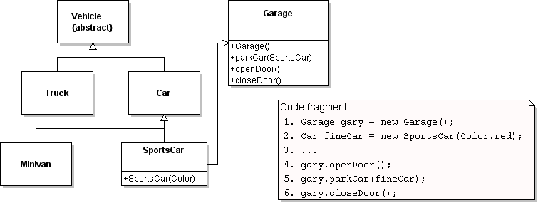
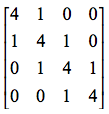
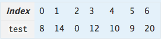
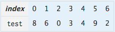
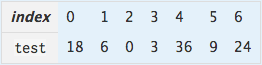

Canterbury QuestionBank
| Field | Value |
|---|---|
| ID | 633235 [created: 2013-06-12 23:13:29, author: crjjrc (xchris), avg difficulty: 1.0000] |
| Question |
What is printed when the following program runs? public class Main {
public static boolean getTrue() {
System.out.print("T");
return true;
}
public static boolean getFalse() {
System.out.print("F");
return false;
}
public static void main(String[] args) {
getFalse() && getFalse();
}
}
|
| A | FF |
| B | T |
| C | TF |
| *D* | F |
| E | Nothing is printed. |
| Explanation | The first operand is false. && requires both operands to be true, so we don't bother evaluating the second. |
| Tags | Contributor_Chris_Johnson, ATT-Transition-Code_to_English, Skill-Trace_IncludesExpressions, ATT-Type-How, Difficulty-1-Low, Block-Horizontal-2-Struct_Control, ExternalDomainReferences-1-Low, Block-Vertical-4-Macro-Structure, Language-Java, Bloom-2-Comprehension, TopicSimon-LogicalOperators, CS1, LinguisticComplexity-1-Low, TopicSimon-MethodsFuncsProcs, CodeLength-lines-06-to-24_Medium, ConceptualComplexity-1-Low, Nested-Block-Depth-0-no_ifs_loops |
| Field | Value |
|---|---|
| ID | 618480 [created: 2013-05-28 19:39:50, author: marzieh (xmarzieh), avg difficulty: 0.0000] |
| Question |
It is desired to have an output as shown bellow as a consequence of running the following code. What would be the type of st1? __________ st1 = new __________("Measure twice, cut once"); System.out.println(st1); System.out.println(st1.toUpperCase()); System.out.println(st1);
Measure twice, cut once MEASURE TWICE, CUT ONCE Measure twice, cut once |
| *A* | String |
| B | StringBuffer |
| C | StringBuilder |
| D | All of the above is possible |
| Field | Value |
|---|---|
| ID | 618492 [created: 2013-05-28 19:46:57, author: marzieh (xmarzieh), avg difficulty: 0.0000] |
| Question |
What package should be imported for this code to work correctly? ArrayList <Integer> intValues = new ArrayList<Integer> (); public void add (){ for (int i=0; i <50; i++ ) intValues.add(i); } |
| *A* | java.util |
| B | java.lang |
| C | java.io |
| D | java.math |
| Field | Value | ||||||||||||
|---|---|---|---|---|---|---|---|---|---|---|---|---|---|
| ID | 635039 [created: 2013-06-29 23:35:51, author: patitsas (xelizabeth), avg difficulty: 0.0000] | ||||||||||||
| Question |
Nathalin has created an integer array arr containing 5 zeros. Fill in the table:
|
||||||||||||
| *A* | A = 0x00123abc00, B = 0x00123abc04 |
||||||||||||
| B | A = 0x00123abc04, B = 0x00123abc04 |
||||||||||||
| C | A = 0x00123abc04, B = 0x00123abc08 |
||||||||||||
| D | A = 0, B = 0 |
||||||||||||
| E | A = 0x00123abc00, B = 0x00123abc00 |
||||||||||||
| Explanation | arr[0] has the same addresss as arr does. arr[1] will have arr[0]'s mem address + sizeof(arr[0]), which is 4. |
||||||||||||
| Tags | Contributor_Elizabeth_Patitsas, ATT-Transition-Code_to_CSspeak, Skill-Trace_IncludesExpressions, ATT-Type-How, Difficulty-2-Medium, Block-Horizontal-1-Struct_Text, ExternalDomainReferences-1-Low, TopicSimon-ArithmeticOperators, TopicSimon-Arrays, Block-Vertical-2-Block, Language-C, TopicSimon-DataTypesAndVariables, Bloom-2-Comprehension, LinguisticComplexity-1-Low, CS2, TopicWG-Pointers-ButNotReferences, CodeLength-lines-00-to-06_Low, ConceptualComplexity-2-Medium, Nested-Block-Depth-0-no_ifs_loops |
| Field | Value |
|---|---|
| ID | 618503 [created: 2013-05-28 19:55:54, author: marzieh (xmarzieh), avg difficulty: 0.0000] |
| Question |
If we know the length of the string used in our program is almost 200, is there any difference between these following definitions in terms of performance? StringBuilder string1 = new StringBuilder(); StringBuilder string2 = new StringBuilder(50); StringBuilder string3 = new StringBuilder(100); |
| A | No, there is no performance difference. |
| B | Yes, the definition of string1 is better. |
| C | Yes, the definition of string2 is better. |
| *D* | Yes, the definition of String3 is better. |
| Field | Value |
|---|---|
| ID | 632120 [created: 2013-06-14 00:01:24, author: tclear (xtony), avg difficulty: 1.0000] |
| Question |
Consider these lines of code: txtName.SetFocus txtName.SelStart = 0 txtName.SelLength = Len(txtName.Text) txtName is an edit text box which is currently visible. What is the code expected to do? |
| A |
Clear the text in txtName. |
| B |
Copy the text in txtName to the clipboard. |
| C |
Fill txtName with text pasted from the clipboard. |
| *D* |
Highlight all the text in txtName. |
| E | Remove the highlight from all the text in txtName. |
| Explanation | The code sets focus to the text box and by selecting the focus area from start of the text box to its end thereby highlights the contents |
| Tags | Contributor_Tony_Clear, Skill-Trace_IncludesExpressions, Difficulty-1-Low, Block-Horizontal-1-Struct_Text, Block-Vertical-1-Atom, Bloom-2-Comprehension, TopicSimon-GUI-Design-Implementat, Language-VB, CS1, CodeLength-lines-00-to-06_Low |
| Field | Value |
|---|---|
| ID | 618563 [created: 2013-05-28 20:31:10, author: marzieh (xmarzieh), avg difficulty: 0.0000] |
| Question |
Depending on which delimiter is used in the following code, which output will be resulted respectively? String input = "Keep your friends close and your enemies closer"; Scanner sc_input = new Scanner(input).useDelimiter("_______________"); while (sc_input.hasNext()) System.out.println(sc_input.next()); sc_input.close(); I. \\s*close\\s II. \\s*close\\s* III. \\s*close |
| A |
I. Keep your friends and your enemies closer II. Keep your friends and your enemies closer III. Keep your friends and your enemies r |
| B |
I. Keep your friends and your enemies closer II. Keep your friends and your enemies r III. Keep your friends and your enemies r |
| *C* |
I. Keep your friends and your enemies closer II. Keep your friends and your enemies r III. Keep your friends and your enemies r |
| D |
I. Keep your friends and your enemies closer II. Keep your friends and your enemies closer III. Keep your friends and your enemies r |
| Field | Value |
|---|---|
| ID | 632084 [created: 2013-06-16 16:19:36, author: tclear (xtony), avg difficulty: 0.0000] |
| Question | Before testing an executable version of your program with data from a test file using DOS redirection, you should remove all calls to fflush from your program. Why is this necessary? |
| A |
fflush is not part of the ANSI C standard. |
| B |
fflush is for debugging only. It causes a run time error in an exe file. |
| *C* |
fflush would read and ignore all remaining data in the test file. |
| D |
fflush is not in any QuickC library. |
| E | fflush does not echo output to the screen. |
| Explanation | fflush would read and ignore all remaining data in the test file, as it has already flushed the input buffer |
| Tags | Skill-DebugCode, Contributor_Tony_Clear, Difficulty-2-Medium, Block-Horizontal-2-Struct_Control, Block-Vertical-3-Relations, Language-C, TopicSimon-FileIO, Bloom-3-Analysis, CS1 |
| Field | Value |
|---|---|
| ID | 618556 [created: 2013-05-28 20:26:57, author: marzieh (xmarzieh), avg difficulty: 0.0000] |
| Question | To let the Scanner sc = new Scanner(System.in); statement works fine, which package should be imported? |
| *A* | java.util |
| B | java.io |
| C | java.lang |
| D | java.Scanner |
| Field | Value |
|---|---|
| ID | 632098 [created: 2013-06-17 20:36:43, author: marzieh (xmarzieh), avg difficulty: 1.0000] |
| Question | Suppose we have an arbitrary number of entries that each includes a key and a value. We never need to search the entries while the rule for insertion and removal is first-in-last-out. Which data structure is proper? |
| A | one dimensional array |
| B | two dimensional array |
| *C* | single linked list |
| D | double linked list |
| Field | Value |
|---|---|
| ID | 632110 [created: 2013-06-14 22:24:28, author: tclear (xtony), avg difficulty: 0.0000] |
| Question | I have a number of different forms in my program, and have help topics explaining how each should be used. When the users presses F1, I want the appropriate help topic to appear depending on which form is currently open. What is the easiest way to achieve this? |
| A |
Set the HelpContextID property of the Application object to the appropriate ID value. |
| *B* |
Set the HelpContextID property of each form to the appropriate ID value. |
| C |
Set the HelpContext property of a Common Dialog control to the appropriate ID value. |
| D |
Set the HelpCommand property of a Common Dialog control to the appropriate ID value. |
| E | Rewrite the help as a number of different help files, one for each form. Use a different HelpFile property for each form. |
| Explanation |
The HelpContextID property is used to link a user interface element (such as a control, form, or menu) to a related topic in a Help file. The HelpContextID property must be a Long that matches the Context ID of a topic in a WinHelp (.hlp) or HTML Help (.chm) file. source http://msdn.microsoft.com/en-us/library/aa261329%28v=vs.60%29.aspx |
| Tags | Skill-PureKnowledgeRecall, Contributor_Tony_Clear, Difficulty-1-Low, Block-Horizontal-1-Struct_Text, Block-Vertical-1-Atom, Bloom-1-Knowledge, Language-VB, TopicSimon-IO, CS1, CodeLength-NotApplicable, TopicSimon-ProgramDesign |
| Field | Value |
|---|---|
| ID | 618487 [created: 2013-05-28 19:44:08, author: marzieh (xmarzieh), avg difficulty: 0.0000] |
| Question |
To make the following code work without any error, one of the given solutions is not right. Which one is it? class D { int Diameter; public D(int d){ Diameter = d; } } public class E { public static void main(String arg[]){ D diam = new D(); } } |
| A | To omit the input argument of the constructor. |
| B | To define diam by passing an int value to constructor. |
| C | To define a null constructor. |
| *D* | To define the constructor private. |
| Field | Value |
|---|---|
| ID | 630992 [created: 2013-06-13 13:17:04, author: edwards@cs.vt.edu (xstephen), avg difficulty: 1.0000] |
| Question | Suppose you are writing a method in a new class. You are also writing unit test cases to demonstrate that this method works correctly. You know you have written enough test cases to demonstrate the method works as desired when? |
| A | You have written at least one test case that uses the method. |
| *B* | You have written separate test cases for each identifiable “group” of input values and/or output values where the behavior is expected to be similar. |
| C | You have written at least one test case for every input value that can be given to the method. |
| D | You have written at least one test case for every output value that can be produced by the method. |
| E | You have written at least one test case for every input/output value combination that can be given to/produced by the method. |
| Explanation | For most interesting methods, there are too many possible input values and/or output values for you to check them all. However, checking just one input our output is insufficient for methods that do anything sophisticated. As a result, it is often helpful to think of the different cases or "equivalence classes" of input/output values where the methods behaves similarly, and ensure you test each such group separately. Often, writing multiple tests for each group--so that you can double-check the method's behavior "at the boundary" of the group--is especially helpful. |
| Tags | ATT-Transition-ApplyCSspeak, Contributor_Stephen_Edwards, Skill-TestProgram, ATT-Type-How, Difficulty-1-Low, Block-Horizontal-3-Funct_ProgGoal, ExternalDomainReferences-1-Low, Block-Vertical-4-Macro-Structure, Bloom-1-Knowledge, Language-none-none-none, CS1, CodeLength-NotApplicable, ConceptualComplexity-1-Low, Nested-Block-Depth-0-no_ifs_loops, TopicSimon-Testing |
| Field | Value |
|---|---|
| ID | 618540 [created: 2013-05-28 20:19:27, author: marzieh (xmarzieh), avg difficulty: 1.0000] |
| Question |
Is there any error in this code? String [] firstNames = {"Neda", "Dorsa"}; int [] ages = {10, 14}; if (ages[0]>ages[1]) if (firstNames[0]> firstNames [1]) System.out.print(firstNames[0] + "has the priority"); else System.out.print("They both have the same priority"); else System.out.print(firstNames[1] + "has the priority"); |
| *A* | Yes, wrong operator has been used for string type. |
| B | Yes, wrong operator has been used for int type. |
| C | Yes, array is out of bound. |
| D | This code has no Error. |
| Field | Value |
|---|---|
| ID | 630999 [created: 2013-06-13 13:33:44, author: edwards@cs.vt.edu (xstephen), avg difficulty: 0.0000] |
| Question |
Consider the incomplete code segment below. The segment is supposed to initialize a 4 x 4 matrix as shown in this image:
final int SIZE = _________; // line 0
int matrix[][] = new int[SIZE][SIZE]; // line 1
for (int i = 0; i < SIZE; i++) // line 2
{
for (int j = 0; j < SIZE; j++) // line 3
{
if ( _________________ ) // line 4
{
matrix[i][j] = 4; // line 5
}
else if ( _______________ ) // line 6
{
matrix[i][j] = 1; // line 7
}
else
{
matrix[i][j] = 0; // line 8
}
}
}
Select statement from the choices below that is the best choice to fill in the blank on |
| A | 3 |
| *B* | 4 |
| C | 5 |
| D | 16 |
| E | None of these |
| Explanation | The constant |
| Tags | Nested-Block-Depth-3-three-nested, ATT-Transition-ApplyCode, Contributor_Stephen_Edwards, Skill-Trace_IncludesExpressions, ATT-Type-How, Difficulty-1-Low, Block-Horizontal-1-Struct_Text, ExternalDomainReferences-1-Low, TopicSimon-Arrays, Block-Vertical-2-Block, TopicSimon-Constants, Language-Java, Bloom-2-Comprehension, LinguisticComplexity-1-Low, TopicSimon-LoopsSubsumesOperators, CS1, CodeLength-lines-06-to-24_Medium, ConceptualComplexity-1-Low, TopicSimon-SelectionSubsumesOps |

| Field | Value |
|---|---|
| ID | 634922 [created: 2013-05-28 12:49:33, author: xrobert (xrobert), avg difficulty: 2.0000] |
| Question |
 Given this class diagram, what best describes what happens with the code fragment above? |
| A |
The code compiles and executes fine |
| B |
Code fails at compile time, error in line 2 |
| C |
Code fails at execution time, error in line 2 |
| *D* |
Code fails at compile time, error in line 5 |
| E | Code fails at execution time, error in line 5 |
| Explanation |
The code will not compile due to the error in line 5: gary's parkCar method takes a parameter of type SportsCar, but fineCar's declared type is Car. Even though fineCar's actual type is SportsCar, the compiler will not let a variable declared as a superclass of the parameter's type be used in the method. Line 2 has no problems, as having the actual type be a subclass of the declared type is legitimate. |
| Tags | ATT-Transition-Code_to_English, Skill-ExplainCode, Contributor_Robert_McCartney, Difficulty-2-Medium, TopicSimon-Assignment, Language-Java, Bloom-3-Analysis, CS1, CodeLength-lines-00-to-06_Low, Neo-Piaget-4-Formal_Operational, Nested-Block-Depth-0-no_ifs_loops |
| Field | Value |
|---|---|
| ID | 631009 [created: 2013-06-13 13:45:16, author: edwards@cs.vt.edu (xstephen), avg difficulty: 1.0000] |
| Question |
Consider the incomplete code segment below. The segment is supposed to initialize a 4 x 4 matrix as shown in this image:  final int SIZE = _________; // line 0
int matrix[][] = new int[SIZE][SIZE]; // line 1
for (int i = 0; i < SIZE; i++) // line 2
{
for (int j = 0; j < SIZE; j++) // line 3
{
if ( _________________ ) // line 4
{
matrix[i][j] = 4; // line 5
}
else if ( _______________ ) // line 6
{
matrix[i][j] = 1; // line 7
}
else
{
matrix[i][j] = 0; // line 8
}
}
}
Select statement from the choices below that is the best choice to fill in the blank on |
| A | i == j - 1 |
| B | i == j |
| C | i == j + 1 |
| *D* | Math.abs(i - j) == 1 |
| E | None of these |
| Explanation | Line 4 controls where the "4" values are placed in the two-dimensional array. They should be placed at all locations where i and j differ by 1. |
| Tags | Nested-Block-Depth-3-three-nested, ATT-Transition-ApplyCode, Contributor_Stephen_Edwards, Skill-Trace_IncludesExpressions, Skill-WriteCode_MeansChooseOption, ATT-Type-How, Difficulty-1-Low, Block-Horizontal-2-Struct_Control, ExternalDomainReferences-1-Low, TopicSimon-Arrays, Block-Vertical-2-Block, Language-Java, Bloom-2-Comprehension, LinguisticComplexity-1-Low, TopicSimon-LoopsSubsumesOperators, CS1, CodeLength-lines-06-to-24_Medium, ConceptualComplexity-1-Low, TopicSimon-SelectionSubsumesOps |
| Field | Value |
|---|---|
| ID | 634910 [created: 2013-06-19 13:26:14, author: crjjrc (xchris), avg difficulty: 1.0000] |
| Question | Let's call the index at which an element is placed in an otherwise empty hashtable index h. With open addressing, a key-value pair may collide with another and be placed in a different location according to some defined scheme. Where may a key-value pair be placed? |
| *A* | anywhere in the array |
| B | at a list stored at index h |
| C | at index h or after |
| D | at index h or before |
| Explanation | With open addressing, some sort of probing algorithm is used to resolve collisions. Probing involves stepping along from the collision index to a subsequent element whose distance is determined by some step size. This probing visits all elements of the array, if need be. |
| Tags | Contributor_Chris_Johnson, ATT-Transition-ApplyCSspeak, Skill-PureKnowledgeRecall, ATT-Type-How, Difficulty-1-Low, Block-Horizontal-2-Struct_Control, ExternalDomainReferences-1-Low, Block-Vertical-2-Block, TopicSimon-CollectionsExceptArray, TopicWG-Hashing-HashTables, Bloom-3-Analysis, Language-none-none-none, LinguisticComplexity-1-Low, CS2, CodeLength-NotApplicable, ConceptualComplexity-2-Medium, Nested-Block-Depth-0-no_ifs_loops |
| Field | Value |
|---|---|
| ID | 618667 [created: 2013-05-28 21:23:28, author: marzieh (xmarzieh), avg difficulty: 1.0000] |
| Question | We have defined two JButton in a class and are going to handle the events by implementing ActionListener. As we know, this interface has a method called actionPerformed that we have to override it in our class. What would be the best way (i.e. object oriented approach) to listen to the events regarding both the buttons? |
| A | Override actionPerformed method twice for both the buttons. |
| B | Override actionPerformed method once, get the source of event in this method and then handle the events. |
| C | Create two separate classes, each should implements ActionListener interface. Then register each button with each classes. |
| *D* | use inner classes, each implements ActionListener interface. Each button should be registered with one of these inner classes. |
| Field | Value |
|---|---|
| ID | 634919 [created: 2013-06-29 21:34:03, author: patitsas (xelizabeth), avg difficulty: 0.0000] |
| Question |
Grace has written a method to pop from a stack; fill in the pre-condition.
{
// pops the stack pointed to by head; does nothing to alter that node
// PRE:
// POST: head now points to what was the second element of the list
struct node* to_pop = *head;
*head = (*head)->next;
return to_pop;
}
|
| A | head != NULL |
| *B* | *head != NULL |
| C | **head != NULL |
| D | to_pop != NULL |
| Explanation | *head != NULL is the best answer of A-C as it has the closest level of detail to what is used in the code |
| Tags | Contributor_Elizabeth_Patitsas, ATT-Transition-Code_to_CSspeak, Skill-WriteCode_MeansChooseOption, ATT-Type-How, Difficulty-2-Medium, ExternalDomainReferences-1-Low, Block-Horizontal-3-Funct_ProgGoal, TopicSimon-Assignment, Block-Vertical-2-Block, Language-C, TopicSimon-DataTypesAndVariables, Bloom-3-Analysis, LinguisticComplexity-1-Low, CS2, TopicWG-Pointers-ButNotReferences, CodeLength-lines-00-to-06_Low, ConceptualComplexity-2-Medium, Nested-Block-Depth-0-no_ifs_loops, TopicSimon-Testing |
| Field | Value |
|---|---|
| ID | 634980 [created: 2013-06-19 15:43:37, author: kate (xkate), avg difficulty: 0.0000] |
| Question | Which of the following statements about binary search algorithms is FALSE? |
| A | The data must be sorted. |
| B | There must be a mechanism to access elements in the middle of the data structure. |
| C | Binary search is inefficient when performed on a linked list. |
| *D* | Binary search can be implemented to take |
| Explanation | Binary search takes (log n) time, worst case. |
| Tags | ATT-Transition-ApplyCSspeak, Contributor_Kate_Sanders, Skill-ExplainCode, ATT-Type-How, Difficulty-1-Low, Block-Horizontal-1-Struct_Text, ExternalDomainReferences-1-Low, TopicSimon-Arrays, Block-Vertical-2-Block, TopicWG-LinkedLists, Bloom-2-Comprehension, Language-none-none-none, LinguisticComplexity-1-Low, CS2, CodeLength-NotApplicable, TopicWG-Searching-Binary, ConceptualComplexity-2-Medium, Nested-Block-Depth-0-no_ifs_loops, Contributor_Andrew_Luxton-Reilly |
 (n) time in the worst case.
(n) time in the worst case.| Field | Value |
|---|---|
| ID | 634975 [created: 2013-06-22 07:49:29, author: jspacco (xjaime), avg difficulty: 2.0000] |
| Question |
Suppose you are using a library implementation of a LinkedList. You have only the compiled binary version of the code, but not the source code. You want to know if the runtime complexity of the size() method is O(1). (i.e. you want to know if the library stores the size, or if it counts each node every time size() is invoked). Which approach(es) would tell you if the size() method is O(1)? |
| A | Insert one element and time how long the size method takes; compare this to how long the size method takes if you had inserted 100 elements. O(1) means they should be about equal. |
| *B* | Insert a million elements and time how long the size method takes; compare this to how long the size method takes if you had inserted 10 million elements. O(1) means they should be about equal. |
| C |
Insert 10 billion elements and time how long the size method takes; compare this to how long the size method takes if you had inserted 100 billion elements. O(1) means they should be about equal. |
| D | B and C both work |
| E | All 3 will work |
| Explanation |
A won't work because most of what you are timing is the JVM starting up and shutting down. In fact, just checking the time elapsed may require as many machine instructions as checking the size of a linked list of size 1. C is also unlikely to work. Suppose each element is a single int, which is 4 bytes (this is a lower-bound on things you can put in a collection). A billion elements is 4 billion bytes. A gigabyte is a little more than a billion bytes, so this likely fills most of your RAM (about 4GB for many laptops and desktops in 2013). 10 billion elements is about 37 GB, which will fill the memory of all but the biggest machines available. You will be timing the garbage collector and memory allocator algorithms, not the size() method. |
| Tags | Contributor_Jaime_Spacco, ATT-Transition-CSspeak_to_English, SkillWG-AnalyzeCode, ATT-Type-Why, Difficulty-3-High, TopicSimon-AlgorithmComplex-BigO, ExternalDomainReferences-1-Low, Block-Horizontal-3-Funct_ProgGoal, Block-Vertical-4-Macro-Structure, TopicWG-LinkedLists, Bloom-6-Evaluation, Language-none-none-none, CS2, LinguisticComplexity-2-Medium, TopicWG-Runtime-StorageManagement, CodeLength-NotApplicable, ConceptualComplexity-3-High, Nested-Block-Depth-0-no_ifs_loops |
| Field | Value |
|---|---|
| ID | 633287 [created: 2013-06-21 09:30:56, author: jspacco (xjaime), avg difficulty: 0.5000] |
| Question | What is returned by |
| *A* | True |
| B | False |
| C | 'A' |
| D | an error |
| E | none of the above |
| Explanation | This is a lexicographic (i.e. alphabetic) comparison, but the first String 'A' is a substring of the second String. We fall back on the "nothing before something" principle, and return True, because when sorting Strings, nothing comes before something. This is why the word 'a' comes before 'aardvark' in the dictionary, as well as why 'ant' comes before 'anteater' and 'the' comes before 'these' or 'then'. |
| Tags | ATT-Transition-ApplyCSspeak, Contributor_Jaime_Spacco, Skill-Trace_IncludesExpressions, ATT-Type-How, Difficulty-1-Low, Block-Horizontal-2-Struct_Control, ExternalDomainReferences-1-Low, Block-Vertical-1-Atom, Bloom-2-Comprehension, Language-Python, CS1, LinguisticComplexity-1-Low, CodeLength-lines-00-to-06_Low, TopicSimon-Strings, Nested-Block-Depth-0-no_ifs_loops |
| Field | Value |
|---|---|
| ID | 633252 [created: 2013-06-18 07:28:42, author: crjjrc (xchris), avg difficulty: 1.0000] |
| Question | Growing the array used to implement a heap so that it may hold more elements is |
| A | O(1) |
| B | O(log N) |
| *C* | O(N) |
| D | O(N log N) |
| E | O(N2) |
| Explanation | The order of elements in the array doesn't change any. They only need to be copied over in their original sequence, making this an O(N) operation. |
| Tags | Contributor_Chris_Johnson, ATT-Transition-ApplyCSspeak, Skill-PureKnowledgeRecall, ATT-Type-How, Difficulty-1-Low, Block-Horizontal-2-Struct_Control, ExternalDomainReferences-1-Low, Block-Vertical-2-Block, TopicSimon-CollectionsExceptArray, TopicWG-Heaps, Bloom-3-Analysis, Language-none-none-none, LinguisticComplexity-1-Low, CS2, CodeLength-NotApplicable, ConceptualComplexity-2-Medium, Nested-Block-Depth-0-no_ifs_loops |
| Field | Value |
|---|---|
| ID | 630935 [created: 2013-06-13 11:48:32, author: kate (xkate), avg difficulty: 0.0000] |
| Question |
Suppose you are writing software for a helpdesk. Each request is entered into the system as it arrives. Which of the following abstract datatypes would be the best choice to store these requests? Be prepared to justify your answer. |
| A | A Stack |
| B | A Queue |
| C | An OrderedList |
| *D* | A PriorityQueue |
| E | A Dictionary |
| Explanation |
B and D are the two best choices. B allows you to handle the requests in the order received; D allows you the flexibility to override that order when needed, by giving certain requests a higher priority. E is less good because although you could let a priority be the index into the Dictionary, Dictionaries aren't guaranteed to return items of the same priority in the order they were added to the Dictionary. A is wrong, because it would guarantee that the most recent requests are always handled first. An argument could be made for C -- elements could be added to the list in order of priority, following any other elements with the same priority. The needed operations will likely be less efficient than they would be with a Queue or PriorityQueue, however. |
| Tags | ATT-Transition-ApplyCSspeak, Contributor_Kate_Sanders, Skill-DesignProgramWithoutCoding, ATT-Type-How, Difficulty-2-Medium, Block-Horizontal-3-Funct_ProgGoal, ExternalDomainReferences-2-Medium, Block-Vertical-4-Macro-Structure, Bloom-5-Synthesis, Language-none-none-none, CS2, LinguisticComplexity-2-Medium, MultipleAnswers-AAA-WWWWWWWWWWWWW, CodeLength-NotApplicable, TopicSimon-ProgramDesign, Nested-Block-Depth-0-no_ifs_loops |
| Field | Value |
|---|---|
| ID | 631885 [created: 2013-06-17 08:33:17, author: kate (xkate), avg difficulty: 1.0000] |
| Question |
After the assignment statement what is returned by |
| A | "ntro" |
| B | "nt" |
| C | "trop" |
| *D* | "tr" |
| E | an error |
| Explanation | The Java |
| Tags | ATT-Transition-ApplyCode, Contributor_Kate_Sanders, Skill-Trace_IncludesExpressions, ATT-Type-How, Difficulty-1-Low, Block-Horizontal-2-Struct_Control, ExternalDomainReferences-1-Low, Block-Vertical-2-Block, Language-Java, Bloom-2-Comprehension, LinguisticComplexity-1-Low, CSother, CodeLength-lines-00-to-06_Low, ConceptualComplexity-2-Medium, Nested-Block-Depth-0-no_ifs_loops, TopicSimon-Strings |
| Field | Value |
|---|---|
| ID | 633567 [created: 2013-06-19 14:30:38, author: crjjrc (xchris), avg difficulty: 1.0000] |
| Question | You must store a large amount of data, and both searching and inserting new elements must be as fast as possible. What's the simplest data structure that meets your needs? |
| A | Ordered array |
| B | Linked list |
| *C* | Hashtable |
| D | Binary search tree |
| E | Self-balancing tree |
| Explanation | Hashtables provide O(1) insertion and searching, provided collisions aren't too numerous. |
| Tags | Contributor_Chris_Johnson, ATT-Transition-ApplyCSspeak, Skill-PureKnowledgeRecall, ATT-Type-How, Difficulty-1-Low, Block-Horizontal-2-Struct_Control, ExternalDomainReferences-1-Low, TopicWG-ChoosingAppropriateDS, TopicSimon-CollectionsExceptArray, Block-Vertical-4-Macro-Structure, Bloom-1-Knowledge, Language-none-none-none, LinguisticComplexity-1-Low, CS2, CodeLength-NotApplicable, ConceptualComplexity-2-Medium, Nested-Block-Depth-0-no_ifs_loops |
| Field | Value |
|---|---|
| ID | 632103 [created: 2013-06-17 20:41:33, author: marzieh (xmarzieh), avg difficulty: 1.0000] |
| Question | Which data structure does java use when evaluates a mathematical expression in a program? |
| A |
A tree |
| *B* | A binary tree |
| C | A linked list |
| D | An array |
| Field | Value |
|---|---|
| ID | 633636 [created: 2013-06-22 09:11:30, author: jspacco (xjaime), avg difficulty: 2.0000] |
| Question |
Suppose we have a Queue implemented with a circular array. The Which are not legal values for |
| A |
front: 0 rear: 5 |
| *B* |
front: 5 rear: 9 |
| C |
front: 7 rear: 2 |
| D |
front: 9 rear: 4 |
| E | all of the above |
| Explanation | There would only be 4 items in this queue, not 5. This is easier to illustrate with a picture. But you can sort of see the pattern by looking at the absolute value of the difference betwen all of the pairings. B is the only one that differs by 4; the others all differ by 5. |
| Tags | ATT-Transition-ApplyCSspeak, Contributor_Jaime_Spacco, TopicWG-ADT-Queue-Implementations, ATT-Type-How, SkillWG-AnalyzeCode, Difficulty-2-Medium, Block-Horizontal-1-Struct_Text, ExternalDomainReferences-1-Low, TopicSimon-CollectionsExceptArray, Block-Vertical-4-Macro-Structure, Bloom-3-Analysis, Language-none-none-none, LinguisticComplexity-1-Low, CS2, CodeLength-NotApplicable, ConceptualComplexity-2-Medium, Nested-Block-Depth-0-no_ifs_loops |
| Field | Value |
|---|---|
| ID | 633564 [created: 2013-06-19 14:19:42, author: crjjrc (xchris), avg difficulty: 1.0000] |
| Question | You know exactly how much data you need to store, but there's not much of it. You do need to be able to search the collection quickly. What is the simplest data structure that best suits for your needs? |
| A | Unordered array |
| *B* | Ordered array |
| C | Linked list |
| D | Hashtable |
| E | Binary search tree |
| Explanation | The memory needs are known, making an array a fine choice. Sorted arrays can be searched quickly with binary search. |
| Tags | Contributor_Chris_Johnson, ATT-Transition-ApplyCSspeak, Skill-PureKnowledgeRecall, ATT-Type-How, Difficulty-1-Low, ExternalDomainReferences-1-Low, Block-Horizontal-3-Funct_ProgGoal, TopicSimon-Arrays, TopicWG-ChoosingAppropriateDS, TopicSimon-CollectionsExceptArray, Block-Vertical-4-Macro-Structure, Bloom-1-Knowledge, Language-none-none-none, LinguisticComplexity-1-Low, CS2, CodeLength-NotApplicable, ConceptualComplexity-2-Medium, Nested-Block-Depth-0-no_ifs_loops |
| Field | Value |
|---|---|
| ID | 618650 [created: 2013-05-28 21:14:33, author: marzieh (xmarzieh), avg difficulty: 1.0000] |
| Question |
What would be the output? public class test { static int testCount; public test(){ testCount ++; } public static void main(String [] Args){ test t1 = new test(); System.out.println(t1.testCount); test t2 = new test(); System.out.println(t1.testCount + " "+ t2.testCount); test t3 = new test(); System.out.println(t1.testCount+ " "+ t2.testCount+ " "+ t3.testCount); } } |
| A |
0 0 0 0 0 0 |
| B |
1 1 1 1 1 1 |
| *C* |
1 2 2 3 3 3 |
| D | This is an error. testCount has never been initialized. |
| Field | Value |
|---|---|
| ID | 632113 [created: 2013-06-14 00:33:53, author: tclear (xtony), avg difficulty: 1.0000] |
| Question | I have a data control, dtData, and several text boxes which are bound to it. The program user edits some of the text in one of the boxes, but makes a mistake and presses the Cancel button to undo the changes. What code should the Cancel button invoke? |
| A |
dtData.Recordset.Update |
| B |
dtData.Recordset.Delete |
| *C* |
dtData.UpdateControls |
| D |
dtData.UpdateRecord |
| E | dtData.Clear |
| Explanation | This method applies the cancel event procedure to restore the display content of the text boxes associated with the Data control without affecting the underlying recordset. |
| Tags | Skill-ExplainCode, Contributor_Tony_Clear, Difficulty-2-Medium, Block-Horizontal-1-Struct_Text, Block-Vertical-2-Block, Bloom-2-Comprehension, TopicSimon-FileIO, TopicSimon-GUI-Design-Implementat, Language-VB, CS1, CodeLength-lines-00-to-06_Low |
| Field | Value |
|---|---|
| ID | 618495 [created: 2013-05-28 19:49:03, author: marzieh (xmarzieh), avg difficulty: 0.0000] |
| Question |
How many active object references and reachable objects will be produced by this code? String first = new String("Dorsa"); String second = new String("Mahsa"); String third = second; second = null; |
| *A* | 2 , 2 |
| B | 3, 2 |
| C | 3, 3 |
| D | 2, 3 |
| Field | Value |
|---|---|
| ID | 635020 [created: 2013-05-21 14:33:56, author: mikeyg (xmikey), avg difficulty: 2.0000] |
| Question | Programs implementing the "Examine All" programming pattern typically run in time: |
| A | O(n2) |
| B | O(n3) |
| *C* | O(n) |
| D | O(n!) |
| E | O(n log2 n) |
| Explanation | Examine all algorithm need, in the worst case, to individually "process" each element or value in the input once. Hence examine all algorithms exhibit a linear run time. Examples of examine all algorithms include Find Largest, Count Odd, or, Is Sorted. |
| Tags | Nested-Block-Depth-2-two-nested, ATT-Transition-ApplyCSspeak, Contributor_Michael_Goldweber, Skill-PureKnowledgeRecall, ATT-Type-Why, Difficulty-2-Medium, TopicSimon-AlgorithmComplex-BigO, Block-Horizontal-2-Struct_Control, ExternalDomainReferences-1-Low, Block-Vertical-4-Macro-Structure, Bloom-3-Analysis, Language-none-none-none, CS1, LinguisticComplexity-1-Low, CodeLength-NotApplicable |
| Field | Value |
|---|---|
| ID | 633281 [created: 2013-06-21 09:24:05, author: jspacco (xjaime), avg difficulty: 1.0000] |
| Question | Which of the following are not legal Java identifiers? |
| A | fiveGuys |
| B | 5Guys |
| C | five_guys |
| *D* | numGuys5 |
| E | five guys |
| Explanation | E is also illegal. |
| Tags | ATT-Transition-ApplyCSspeak, Contributor_Jaime_Spacco, Skill-PureKnowledgeRecall, ATT-Type-How, Difficulty-1-Low, Block-Horizontal-1-Struct_Text, ExternalDomainReferences-1-Low, Block-Vertical-1-Atom, TopicSimon-DataTypesAndVariables, Bloom-1-Knowledge, Language-Java, CS1, LinguisticComplexity-1-Low, CodeLength-NotApplicable, ConceptualComplexity-1-Low, Nested-Block-Depth-0-no_ifs_loops |
| Field | Value |
|---|---|
| ID | 618971 [created: 2013-05-29 04:49:17, author: marzieh (xmarzieh), avg difficulty: 2.0000] |
| Question |
Which of the following choices will NOT produce the same result as the following condition? if ( mark == 'A' && GPA > 3.5) System.out.println("First Class"); else if ( mark == 'A' && GPA <= 3.5) System.out.println("Second Class"); else if ( mark != 'A' && GPA > 3.5) System.out.println("Third Class"); else if ( mark != 'A' && GPA <= 3.5) System.out.println("Fourth Class"); |
| *A* |
if ( mark != 'A' || GPA < 3.5) System.out.println("First Class"); else if ( mark != 'A' || GPA >= 3.5) System.out.println("Second Class"); else if ( mark == 'A' || GPA < 3.5) System.out.println("Third Class"); else if ( mark == 'A' || GPA >= 3.5) System.out.println("Fourth Class"); |
| B |
if ( mark != 'A') if (GPA > 3.5) System.out.println("Third Class"); else System.out.println("Fourth Class"); else if (GPA > 3.5) System.out.println("First Class"); else System.out.println("Second Class"); |
| C |
if ( GPA > 3.5) if (mark == 'A') System.out.println("First Class"); else System.out.println("Third Class"); else if (mark == 'A') System.out.println("Second Class"); else System.out.println("Fourth Class"); |
| D |
if ( mark == 'A') if (GPA > 3.5) System.out.println("First Class"); else System.out.println("Second Class"); else if (GPA > 3.5) System.out.println("Third Class"); else System.out.println("Fourth Class"); |
| Field | Value |
|---|---|
| ID | 634199 [created: 2013-06-24 15:22:47, author: patitsas (xelizabeth), avg difficulty: 1.0000] |
| Question |
Chengcheng has an array that he would like to sort, and implements the following sorting
{
// sorts the array a[], of length "length"
int i, j, value;
for(i = 1; i < length; i++)
{
value = a[i];
for (j = i - 1; j >= 0 && a[j] > value; j--)
{
a[j + 1] = a[j];
}
a[j + 1] = value;
}
}
|
| *A* | Insertion Sort |
| B | Selection Sort |
| C | Bubble sort |
| D | Mergesort |
| Explanation | The code is working from one end of the array to the other, sorting as it goes. |
| Tags | Nested-Block-Depth-2-two-nested, Contributor_Elizabeth_Patitsas, ATT-Transition-Code_to_CSspeak, Skill-ExplainCode, ATT-Type-How, Difficulty-2-Medium, ExternalDomainReferences-1-Low, Block-Horizontal-3-Funct_ProgGoal, TopicSimon-Arrays, Language-C, Block-Vertical-4-Macro-Structure, Bloom-3-Analysis, TopicSimon-LoopsSubsumesOperators, LinguisticComplexity-1-Low, CS2, CodeLength-lines-06-to-24_Medium, TopicWG-Sorting-Quadratic |
| Field | Value |
|---|---|
| ID | 618519 [created: 2013-05-28 20:02:59, author: marzieh (xmarzieh), avg difficulty: 2.0000] |
| Question |
Which definition is not allowed? firstLevel first = new firstLevel(); secondLevel second = new secondLevel(); firstLevel third = new secondLevel(); secondLevel fourth = new firstLevel(); |
| A | first |
| B | second |
| C | third |
| *D* | fourth |
| Field | Value |
|---|---|
| ID | 633889 [created: 2013-06-23 12:53:06, author: patitsas (xelizabeth), avg difficulty: 0.0000] |
| Question |
William has the hash function: hash function h(k) = (sum of the digits) % 10. He wants to hash 33, 60, 24, 42 and 6. Which collision resolution method should he chose in his implementation, if he wants to ensure that adding 80 happens in O(1) time? |
| *A* | Quadratic probing |
| B | Linear probing |
| C | Rth probing, R = 2 |
| Explanation | Both Rth probing (R=2) and linear probing will hash values to the 8 position -- only quadratic probing will leave that position open. |
| Tags | ATT-Transition-ApplyCSspeak, Contributor_Elizabeth_Patitsas, ATT-Type-How, Difficulty-2-Medium, TopicSimon-AlgorithmComplex-BigO, ExternalDomainReferences-1-Low, TopicWG-ChoosingAppropriateDS, TopicWG-Hashing-HashTables, Bloom-3-Analysis, Language-none-none-none, CS2, CodeLength-NotApplicable |
| Field | Value |
|---|---|
| ID | 634130 [created: 2013-06-24 08:03:00, author: patitsas (xelizabeth), avg difficulty: 0.0000] |
| Question |
Yuchi and Rui are working on a problem: to create an array whose elements are the sum of the row and // Yuchi’s Code
#DEFINE N 500
---- (other code skipped) ----
int arr[N][N]; int i; int j;
for(i = 0; i < N; i++)
{
for(j = 0; j < N; j++)
{
arr[i][j] = i + j;
}
}
// Rui’s Code
#DEFINE N 500
---- (other code skipped) ----
int arr[N][N]; int i; int j;
for(i = 0; i < N; i++)
{
for(j = 0; j < N; j++)
{
arr[j][i] = i + j;
}
}
Whose code will be faster? |
| *A* | Yuchi's code |
| B | Rui's code |
| C | The two are identical |
| Explanation | Yuchi's code will be slightly faster as C uses row-major order array storage. |
| Tags | Nested-Block-Depth-2-two-nested, Contributor_Elizabeth_Patitsas, ATT-Transition-Code_to_CSspeak, SkillWG-AnalyzeCode, ATT-Type-Why, Difficulty-3-High, ExternalDomainReferences-1-Low, TopicSimon-Arrays, Language-C, Bloom-3-Analysis, CS2, LinguisticComplexity-2-Medium, TopicWG-Runtime-StorageManagement, CodeLength-lines-06-to-24_Medium, ConceptualComplexity-2-Medium |
| Field | Value |
|---|---|
| ID | 635013 [created: 2013-06-29 23:01:29, author: edwards@cs.vt.edu (xstephen), avg difficulty: 0.0000] |
| Question |
The following method, called maxRow(), is intended to take one parameter: a List where the elements are Lists of Integer objects. You can think of this parameter as a matrix--a list of rows, where each row is a list of "cells" (plain integers). The method sums up the integers in each row (each inner list), and returns the index (row number) of the row with the largest row sum. Choose the best choice to fill in the blank on Line 5 so that this method works as intended: public static int maxRow(List<List<Integer>> matrix)
{
int maxVec = -1; // Line 1
int maxSum = Integer.MIN_VALUE; // Line 2
for (int row = 0; row < __________; row++) // Line 3
{
int sum = 0; // Line 4
for (int col = 0; col < __________; col++) // Line 5
{
sum = sum + __________; // Line 6
}
if (___________) // Line 7
{
maxSum = __________; // Line 8
maxVec = __________; // Line 9
}
}
return maxVec; // Line 10
}
|
| A | matrix.size() |
| B | matrix[row].size() |
| *C* | matrix.get(row).size() |
| D | matrix.get(col).size() |
| E | matrix.get(row).get(col) |
| Explanation | The blank on line 5 controls the upper limit of the |
| Tags | Nested-Block-Depth-2-two-nested, ATT-Transition-ApplyCode, TopicWG-ADT-List-DefInterfaceUse, Contributor_Stephen_Edwards, Skill-WriteCode_MeansChooseOption, ATT-Type-How, Difficulty-1-Low, Block-Horizontal-1-Struct_Text, ExternalDomainReferences-1-Low, Block-Vertical-2-Block, Language-Java, Bloom-3-Analysis, TopicSimon-LoopsSubsumesOperators, CS1, LinguisticComplexity-1-Low, TopicSimon-MethodsFuncsProcs, CodeLength-lines-06-to-24_Medium, ConceptualComplexity-1-Low |
| Field | Value |
|---|---|
| ID | 635042 [created: 2013-06-17 12:11:27, author: xrobert (xrobert), avg difficulty: 0.0000] |
| Question | The scope of a variable in Java is: |
| A | The thing that allows it to see other variables; |
| B | The other variables that it can interact with |
| *C* | The part of the program in which it can be used |
| D | One of its instance variables |
| E | None of the above |
| Explanation | The scope of a variable is the part of the program in which that variable can be referred to by its name. A private instance variable in a class definition, for example, can only be referred to within that class definition. |
| Tags | ATT-Transition-CSspeak_to_English, Contributor_Robert_McCartney, ATT-Type-How, Difficulty-1-Low, Language-none-none-none, CS1, CodeLength-NotApplicable, TopicSimon-Scope-Visibility |
| Field | Value |
|---|---|
| ID | 633894 [created: 2013-06-23 12:39:27, author: patitsas (xelizabeth), avg difficulty: 0.0000] |
| Question | What does a binary tree not have in common with a doubly-linked list? |
| *A* | A node’s definition has (at least) two pointers defined |
| B | If a node A points to a node B, then B will point to A |
| C | A given node will be pointed to at most one other node |
| Explanation | Only the binary tree is hierarchical; only the linked list will have symmetric pointers. |
| Tags | ATT-Transition-ApplyCSspeak, Contributor_Elizabeth_Patitsas, TopicWG-ADT-List-Implementations, ATT-Type-How, Difficulty-2-Medium, ExternalDomainReferences-1-Low, Language-C, Language-Cplusplus, TopicWG-LinkedLists, Bloom-2-Comprehension, CS2, LinguisticComplexity-2-Medium, TopicWG-Pointers-ButNotReferences, CodeLength-NotApplicable, TopicWG-Trees-Other |
| Field | Value |
|---|---|
| ID | 635012 [created: 2013-06-26 03:49:23, author: mikeyg (xmikey), avg difficulty: 0.0000] |
| Question |
After the following syntactically correct code is executed, where will Karel be standing and which direction will the robot be facing? How many beepers will karel be carrying? There are beepers at (2,2), (2,3), (2,4), (2,5), (2,6). (Note: a beeper at (2,5) means there is a beeper at the intersection of 2nd street and 5th avenue.)
karel.move() karel.move() |
| *A* | Robot is facing East with five beepers and is located at (2,8) |
| B | Robot is facing East with five beepers and is located at (2,7) |
| C | Robot is facing North with five beepers and is located at (8,2) |
| D | Robot is facing East with one beeper and is located at (2,2) |
| E | Robot is facing North with one beeper and is located at (2,2) |
| Explanation | There is a final "move" after the loop terminates, moving the robot over one block east (from (2,7) to (2,8)). |
| Tags | Nested-Block-Depth-2-two-nested, ATT-Transition-Code_to_CSspeak, Contributor_Michael_Goldweber, Skill-Trace_IncludesExpressions, ATT-Type-How, Difficulty-1-Low, Block-Horizontal-2-Struct_Control, ExternalDomainReferences-2-Medium, Block-Vertical-2-Block, Bloom-3-Analysis, Language-Python, CS1, LinguisticComplexity-1-Low, CodeLength-lines-06-to-24_Medium |
| Field | Value |
|---|---|
| ID | 635026 [created: 2013-06-17 17:30:15, author: xrobert (xrobert), avg difficulty: 0.0000] |
| Question |
public BallPanel extends javax.swing.JPanel {
private Ball[] _balls;
public BallPanel(){
_balls = new Ball[20];
for (int i=0;i<10;i++)
_balls[i] = new Ball();
}
...
}
After I have instantiated a |
| A | _balls[20] = new Ball(); |
| *B* | _balls[0] = _balls[15];
|
| C | _balls[10].getColor(); |
| D | Both A and C work |
| E | Both B and C work |
| Explanation |
A doesn't work, since the possible range of a 20 element array index is 0 to 19 inclusive. B works, even though _balls[15] was never assigned a value -- its value is set to C doesn't work: since only So the answer is B. |
| Tags | ATT-Transition-ApplyCode, Skill-DebugCode, Skill-ExplainCode, Contributor_Robert_McCartney, ATT-Type-How, Difficulty-2-Medium, TopicSimon-Arrays, TopicSimon-Assignment, Language-Java, Bloom-2-Comprehension, CS1, CodeLength-lines-06-to-24_Medium, Nested-Block-Depth-1 |
| Field | Value |
|---|---|
| ID | 635016 [created: 2013-06-25 15:21:39, author: mikeyg (xmikey), avg difficulty: 0.0000] |
| Question |
Which of the following is an equivalent boolean expression for: NOT(A AND B) |
| A | (NOT A) AND (NOT B) |
| B | A OR B |
| C | (NOT A) AND B |
| *D* | (NOT A) OR (NOT B) |
| E | NOT(A OR B) |
| Explanation | When applying DeMorgan's law, one distributes the NOT over both operands and then one exchanges AND's for OR's, or OR's for AND's |
| Tags | ATT-Transition-ApplyCSspeak, Contributor_Michael_Goldweber, ATT-Type-How, Difficulty-1-Low, SkillWG-AnalyzeCode, Block-Horizontal-2-Struct_Control, ExternalDomainReferences-1-Low, Block-Vertical-1-Atom, Bloom-1-Knowledge, Language-none-none-none, TopicSimon-LogicalOperators, CS1, CodeLength-lines-00-to-06_Low, Nested-Block-Depth-0-no_ifs_loops |
| Field | Value |
|---|---|
| ID | 635021 [created: 2013-06-29 23:06:24, author: edwards@cs.vt.edu (xstephen), avg difficulty: 0.0000] |
| Question |
The following method, called maxRow(), is intended to take one parameter: a List where the elements are Lists of Integer objects. You can think of this parameter as a matrix--a list of rows, where each row is a list of "cells" (plain integers). The method sums up the integers in each row (each inner list), and returns the index (row number) of the row with the largest row sum. Choose the best choice to fill in the blank on Line 6 so that this method works as intended: public static int maxRow(List<List<Integer>> matrix)
{
int maxVec = -1; // Line 1
int maxSum = Integer.MIN_VALUE; // Line 2
for (int row = 0; row < __________; row++) // Line 3
{
int sum = 0; // Line 4
for (int col = 0; col < __________; col++) // Line 5
{
sum = sum + __________; // Line 6
}
if (___________) // Line 7
{
maxSum = __________; // Line 8
maxVec = __________; // Line 9
}
}
return maxVec; // Line 10
}
|
| A | maxSum |
| B | matrix[row][col] |
| *C* | matrix.get(row).get(col) |
| D | matrix.get(col).size() |
| E | maxVec |
| Explanation | The loop on Line 5 incrementally accumulates the sum of all entries in the current row, which is held in the local variable |
| Tags | Nested-Block-Depth-2-two-nested, ATT-Transition-ApplyCode, TopicWG-ADT-List-DefInterfaceUse, Contributor_Stephen_Edwards, Skill-WriteCode_MeansChooseOption, ATT-Type-How, Difficulty-1-Low, Block-Horizontal-1-Struct_Text, ExternalDomainReferences-1-Low, Block-Vertical-2-Block, Language-Java, Bloom-3-Analysis, TopicSimon-LoopsSubsumesOperators, CS1, LinguisticComplexity-1-Low, TopicSimon-MethodsFuncsProcs, CodeLength-lines-06-to-24_Medium, ConceptualComplexity-1-Low |
| Field | Value |
|---|---|
| ID | 635040 [created: 2013-06-17 12:18:18, author: xrobert (xrobert), avg difficulty: 0.0000] |
| Question | The lifetime of a parameter in Java is |
| A | Really long |
| *B* | From when its method is called until it returns |
| C | From when you define the method until you quit out of Eclipse |
| D | As long as the program is running |
| E | None of the above |
| Explanation | The lifetime of a variable is the duration over which it keeps a value unless you change it. With a parameter, its value is set when you invoke the method, and it retains that value (or what every you subsequently set it to) until you return. |
| Tags | ATT-Transition-CSspeak_to_English, Contributor_Robert_McCartney, ATT-Type-How, Difficulty-1-Low, Language-Java, Bloom-3-Analysis, TopicSimon-Lifetime, CS1, LinguisticComplexity-1-Low, CodeLength-NotApplicable, TopicSimon-Params-SubsumesMethods |
| Field | Value |
|---|---|
| ID | 633888 [created: 2013-06-23 12:56:18, author: patitsas (xelizabeth), avg difficulty: 0.0000] |
| Question | Rohan has the code |
| A | 0 |
| *B* | 5 |
| C | 6 |
| D | 8 |
| Explanation | While the \0 will be added to the end of the array, it is not included in the length calculation. |
| Tags | Contributor_Elizabeth_Patitsas, ATT-Transition-Code_to_CSspeak, Skill-PureKnowledgeRecall, ATT-Type-How, Difficulty-1-Low, Block-Horizontal-1-Struct_Text, ExternalDomainReferences-1-Low, TopicSimon-Arrays, Block-Vertical-1-Atom, Language-C, Bloom-1-Knowledge, LinguisticComplexity-1-Low, CS2, CodeLength-lines-00-to-06_Low, TopicSimon-Strings, Nested-Block-Depth-0-no_ifs_loops |
| Field | Value |
|---|---|
| ID | 635023 [created: 2013-06-17 17:47:49, author: xrobert (xrobert), avg difficulty: 0.0000] |
| Question |
Suppose 1. s.push("Finland");
2. s.push("is");
3. s.push("my");
4. String w = s.peek();
5. String x = s.pop();
6. s.push("home");
7. String y = s.pop();
8. String z = s.pop();
What is the value of z after executing these statements in order? |
| A | "Finland" |
| *B* | "is" |
| C | "my" |
| D | "home" |
| E | None of the above |
| Explanation |
After the three pushes the stack contents (from top) is ["my" "is" "Finland" ...] 4. doesn't change the stack. the contents of the stack are (after each numbered instruction) 5. ["is" "Finland" ...] 6. ["home" "is" "Finland" ...] 7. ["is" "Finland" ...] 8. sets z to "is", which is popped, leaving the stack as ["Finland" ...] So B is correct. |
| Tags | ATT-Transition-ApplyCSspeak, Contributor_Robert_McCartney, ATT-Type-How, Difficulty-1-Low, TopicWG-ADT-Stack-DefInterfaceUse, Language-Java, CS2, CodeLength-lines-06-to-24_Medium, ConceptualComplexity-1-Low |
| Field | Value |
|---|---|
| ID | 635038 [created: 2013-06-17 16:18:21, author: xrobert (xrobert), avg difficulty: 0.0000] |
| Question |
public class Outer extends SomeClass implements SomeInterface{
...
private class Inner extends AnotherClass {
????
}
}
Suppose I define an inner class, as is abstractly illustrated by the code above. Assuming that I do not shadow anything (by declaring or defining something in the inner class with the same name as something accessible in the outer class), what in the outer class is accessible to the code in the inner class (at ????, e.g.) ? |
| A | All protected methods and protected instance variables of the outer class |
| B | All public methods and public instance variables of the outer class |
| C | All methods and all public instance variables of the outer class |
| *D* | All methods and instance variables of the outer class. |
| E | None of the above is true |
| Explanation |
The inner class is within the scope of the outer class, which means that all instance variables and public methods (including methods inherited from the outer class's ancestors). are accessible from the inner class. Shadowing is a problem, since there is no automatic way to refer to the instance of the outer class. |
| Tags | ATT-Transition-ApplyCode, Skill-ExplainCode, Contributor_Robert_McCartney, ATT-Type-How, Difficulty-2-Medium, Language-Java, CS1, LinguisticComplexity-1-Low, CS2, CodeLength-lines-00-to-06_Low, TopicSimon-Scope-Visibility, Nested-Block-Depth-1 |
| Field | Value |
|---|---|
| ID | 635036 [created: 2013-06-17 16:55:30, author: xrobert (xrobert), avg difficulty: 0.0000] |
| Question |
1. public BallPanel extends javax.swing.Panel {
2. private Ball[] _balls;
3. public BallPanel(int numberOfBalls){
4. _balls = new Ball[numberOfBalls];
5. for (int i=0;i<_balls.length;i++)
6. _balls[i] = new Ball();
7. }
8. }
In the above Java code, what is the value of |
| A | 0, numberOfBalls |
| *B* | numberOfBalls, numberOfBalls |
| C | i, numberOfBalls |
| D | 0, numberOfBalls – 1 |
| E |
|
| Explanation | When the array is instantiated in line 4, its length is set (to numberOfBalls). Lines 5 and 6 set the values of the array elements, but do not change the length of the array. |
| Tags | ATT-Transition-ApplyCode, Skill-ExplainCode, Contributor_Robert_McCartney, Difficulty-1-Low, TopicSimon-Arrays, TopicSimon-Assignment, Language-Java, Bloom-2-Comprehension, CS1, LinguisticComplexity-1-Low, Nested-Block-Depth-1 |
| Field | Value |
|---|---|
| ID | 635031 [created: 2013-06-17 17:12:30, author: xrobert (xrobert), avg difficulty: 0.0000] |
| Question |
1. import java.util.ArrayList;
2. public BallPanel extends javax.swing.JPanel {
3. private ArrayList <Ball> _moreBalls;
4. public BallPanel(int numberOfBalls){
5. _moreBalls = new ArrayList<Ball>();
6. for (int i=0;i<numberOfBalls;i++)
7. _moreBalls.add(new Ball());
8. }
9. }
What is the value of _moreBalls.size() immediately after lines 4 and 6 (respectively) if we invoke the BallPanel constructor? |
| *A* | 0, numberOfBalls |
| B | numberOfBalls, numberOfBalls |
| C | i, numberOfBalls |
| D | 0, numberOfBalls – 1 |
| E |
|
| Explanation | A is correct. When you instantiate an ArrayList (in line 4) its size (the number of elements in the ArrayList) is zero because you haven't added any elements; lines 5 and 6 add numberOfBalls elements to the ArrayList, so after that the size is numberOfBalls. |
| Tags | ATT-Transition-Code_to_English, Skill-ExplainCode, Contributor_Robert_McCartney, Skill-PureKnowledgeRecall, ATT-Type-How, TopicSimon-CollectionsExceptArray, Language-Java, CS1, LinguisticComplexity-1-Low, Nested-Block-Depth-1 |
| Field | Value |
|---|---|
| ID | 635022 [created: 2013-06-17 17:54:35, author: xrobert (xrobert), avg difficulty: 0.0000] |
| Question |
Suppose 1. s.push("Iceland");
2. s.push("is");
3. String w = s.peek();
4. String x = s.pop();
5. s.push("cool");
6. String y = s.pop();
7. boolean z = s.isEmpty();
What is the value of z after executing this sequence of expressions? |
| A | "Iceland" |
| B | "cool" |
| C | true |
| *D* | false |
| E | None of the above |
| Explanation | In the sequence of operations, we pushed 3 things onto the stack, and only popped 2 off (and at no point had we popped more times than we pushed). So the stack is not empty. |
| Tags | ATT-Transition-CSspeak_to_English, Contributor_Robert_McCartney, Skill-Trace_IncludesExpressions, ATT-Type-How, Difficulty-1-Low, TopicWG-ADT-Stack-DefInterfaceUse, Language-Java, Bloom-3-Analysis, CS1, LinguisticComplexity-1-Low, CS2, CodeLength-lines-06-to-24_Medium |
| Field | Value |
|---|---|
| ID | 635018 [created: 2013-06-29 21:59:37, author: patitsas (xelizabeth), avg difficulty: 0.0000] |
| Question |
Kun has a method: struct node{
struct node *next;
int val;
}
{
free(root);
root = NULL;
}
What is most likely to happen? |
| A | Deletes a copy of root |
| B | Deletes root |
| C | Segfault |
| *D* | A lot of crazy stuff will be printed |
| Explanation | The code frees memory it shouldn't be, and will do a core dump. |
| Tags | Contributor_Elizabeth_Patitsas, ATT-Transition-Code_to_CSspeak, Skill-Trace_IncludesExpressions, ATT-Type-How, Difficulty-3-High, Block-Horizontal-2-Struct_Control, ExternalDomainReferences-1-Low, Block-Vertical-2-Block, Language-C, Bloom-2-Comprehension, TopicSimon-Lifetime, LinguisticComplexity-1-Low, CS2, TopicWG-Pointers-ButNotReferences, TopicWG-Recs-Structs-HeteroAggs, CodeLength-lines-00-to-06_Low, ConceptualComplexity-2-Medium, Nested-Block-Depth-0-no_ifs_loops, TopicSimon-Testing |
| Field | Value |
|---|---|
| ID | 635043 [created: 2013-06-17 11:54:23, author: xrobert (xrobert), avg difficulty: 0.0000] |
| Question |
One of the key features of Object-oriented programming is encapsulation. Because of encapsulation, we generally have _________ instance variables and _____________ methods. |
| A | protected, private |
| *B* | private, public |
| C | public, private |
| D | public, public |
| E | These have nothing to do with encapsulation. |
| Explanation | Encapsulation involves hiding the internal state of an object, in particular not allowing direct access to an object's instance variables. We use methods to define the interactions other objects can have with an object, so the internal structure and information is not revealed to the outside. |
| Tags | ATT-Transition-ApplyCSspeak, Contributor_Robert_McCartney, Skill-PureKnowledgeRecall, Difficulty-1-Low, TopicSimon-DataTypesAndVariables, Bloom-1-Knowledge, Language-Java, CS1, CodeLength-NotApplicable, TopicSimon-Params-SubsumesMethods |
| Field | Value |
|---|---|
| ID | 633877 [created: 2013-06-23 12:42:24, author: patitsas (xelizabeth), avg difficulty: 0.0000] |
| Question | Amr wants to use quicksort to sort the series [1, 2, 3, 4, 5, 6, 7, 8, 9, 10, 11, 12, 13, 14, 15, 16, 17]. What choice of pivot will yield the least efficient code? |
| *A* | The first element of a sublist |
| B | The middle element of a sublist |
| C | A random element of a sublist |
| Explanation | For a ascending sorted list, quicksort partitioning on the smallest element will be O(n^2). |
| Tags | ATT-Transition-ApplyCSspeak, Contributor_Elizabeth_Patitsas, ATT-Type-How, Difficulty-1-Low, ExternalDomainReferences-1-Low, Bloom-2-Comprehension, Language-none-none-none, LinguisticComplexity-1-Low, CS2, CodeLength-NotApplicable, TopicWG-Sorting-NlogN, TopicWG-Sorting-Other, TopicWG-Sorting-Quadratic |
| Field | Value |
|---|---|
| ID | 635121 [created: 2013-06-30 21:03:14, author: edwards@cs.vt.edu (xstephen), avg difficulty: 0.0000] |
| Question |
Suppose you have an array of seven
Trace the execution of the following code: int x = 0;
int y = 0;
for (int i = 0; i < test.length; i++)
{
if (test[i] % 2 == 1)
{
y += test[i];
}
else
{
x += test[i];
}
}
What is the value of |
| A | 2 |
| B | 5 |
| C | 12 |
| *D* | 20 |
| E | 32 |
| Explanation | The loop traverses the array from left to right, and the if statement determines whether the corresponding value is odd or even. The local variable |
| Tags | Nested-Block-Depth-2-two-nested, ATT-Transition-ApplyCode, Contributor_Stephen_Edwards, Skill-Trace_IncludesExpressions, ATT-Type-How, Difficulty-1-Low, Block-Horizontal-2-Struct_Control, ExternalDomainReferences-1-Low, TopicSimon-Arrays, Block-Vertical-2-Block, TopicSimon-DataTypesAndVariables, Language-Java, Bloom-2-Comprehension, TopicSimon-LoopsSubsumesOperators, CS1, LinguisticComplexity-1-Low, CodeLength-lines-06-to-24_Medium, ConceptualComplexity-1-Low, TopicSimon-SelectionSubsumesOps |

| Field | Value |
|---|---|
| ID | 635123 [created: 2013-06-30 21:24:06, author: edwards@cs.vt.edu (xstephen), avg difficulty: 0.0000] |
| Question |
Suppose you have an array of seven  Trace the execution of the following code: int x = 0;
int y = 0;
for (int i = 0; i < test.length; i++)
{
if (test[i] % 4 == 0)
{
x++;
y += test[i];
}
}
What is the value of |
| A | 3 |
| *B* | 4 |
| C | 7 |
| D | 35 |
| E | 40 |
| Explanation | The loop traverses the array from left to right, and the if statement determines whether the corresponding value is evenly divisible by 4. The local variable |
| Tags | Nested-Block-Depth-2-two-nested, ATT-Transition-ApplyCode, Contributor_Stephen_Edwards, Skill-Trace_IncludesExpressions, ATT-Type-How, Difficulty-1-Low, Block-Horizontal-2-Struct_Control, ExternalDomainReferences-1-Low, TopicSimon-Arrays, Block-Vertical-2-Block, TopicSimon-DataTypesAndVariables, Language-Java, Bloom-2-Comprehension, TopicSimon-LoopsSubsumesOperators, CS1, LinguisticComplexity-1-Low, CodeLength-lines-06-to-24_Medium, ConceptualComplexity-1-Low, TopicSimon-SelectionSubsumesOps |
| Field | Value |
|---|---|
| ID | 635124 [created: 2013-06-30 21:29:26, author: edwards@cs.vt.edu (xstephen), avg difficulty: 0.0000] |
| Question |
Suppose you have an array of seven
Trace the execution of the following code: int x = 0;
int y = 0;
for (int i = 0; i < test.length; i++)
{
if (test[i] % 4 == 0)
{
x++;
y += test[i];
}
}
What is the value of |
| A | 3 |
| B | 4 |
| C | 7 |
| D | 35 |
| *E* | 40 |
| Explanation | The loop traverses the array from left to right, and the if statement determines whether the corresponding value is evenly divisible by 4. The local variable y is used to accumulate the sum of the numbers found, so y = 8 + 0 + 12 + 20 = 40. |
| Tags | Nested-Block-Depth-2-two-nested, ATT-Transition-ApplyCode, Contributor_Stephen_Edwards, Skill-Trace_IncludesExpressions, ATT-Type-How, Difficulty-1-Low, Block-Horizontal-2-Struct_Control, ExternalDomainReferences-1-Low, TopicSimon-Arrays, Block-Vertical-2-Block, Language-Java, Bloom-2-Comprehension, TopicSimon-LoopsSubsumesOperators, CS1, LinguisticComplexity-1-Low, CodeLength-lines-06-to-24_Medium, ConceptualComplexity-2-Medium, TopicSimon-SelectionSubsumesOps |

| Field | Value |
|---|---|
| ID | 635125 [created: 2013-06-30 21:13:27, author: edwards@cs.vt.edu (xstephen), avg difficulty: 0.0000] |
| Question |
Suppose you have an array of seven  Trace the execution of the following code: int x = 0;
int y = 0;
for (int i = 0; i < test.length; i++)
{
if (test[i] % 2 == 1)
{
y += test[i];
}
else
{
x += test[i];
}
}
What is the value of |
| A | 2 |
| B | 5 |
| *C* | 12 |
| D | 20 |
| E | 32 |
| Explanation | The loop traverses the array from left to right, and the if statement determines whether the corresponding value is odd or even. The local variable |
| Tags | Nested-Block-Depth-2-two-nested, ATT-Transition-ApplyCode, Contributor_Stephen_Edwards, Skill-Trace_IncludesExpressions, ATT-Type-How, Difficulty-1-Low, Block-Horizontal-2-Struct_Control, ExternalDomainReferences-1-Low, TopicSimon-Arrays, Block-Vertical-2-Block, TopicSimon-DataTypesAndVariables, Language-Java, Bloom-2-Comprehension, TopicSimon-LoopsSubsumesOperators, CS1, LinguisticComplexity-1-Low, CodeLength-lines-06-to-24_Medium, ConceptualComplexity-1-Low, TopicSimon-SelectionSubsumesOps |
| Field | Value |
|---|---|
| ID | 635126 [created: 2013-06-30 21:54:24, author: edwards@cs.vt.edu (xstephen), avg difficulty: 0.0000] |
| Question |
Assume that an object of the following class has just been created: public class Unknown
{
private int x;
public Unknown()
{
x = 17;
method1();
method2(5);
method3();
System.out.println(x); // Line D
}
public void method1()
{
--x;
int x = this.x;
x++;
System.out.println(this.x); // Line A
}
public void method2(int x)
{
x++;
System.out.println(x); // Line B
}
public void method3()
{
--x;
int x = 2;
x++;
System.out.println(x); // Line C
}
}
What output is produced by Line A when an instance of this class is created? |
| A | 2 |
| B | 3 |
| *C* | 16 |
| D | 17 |
| E | 18 |
| Explanation | Line A prints the value of the field called |
| Tags | ATT-Transition-ApplyCode, Contributor_Stephen_Edwards, Skill-Trace_IncludesExpressions, ATT-Type-How, Difficulty-1-Low, Block-Horizontal-2-Struct_Control, ExternalDomainReferences-1-Low, Block-Vertical-2-Block, TopicSimon-DataTypesAndVariables, Language-Java, Bloom-2-Comprehension, CS1, LinguisticComplexity-1-Low, TopicSimon-MethodsFuncsProcs, CodeLength-lines-25-or-more_High, ConceptualComplexity-1-Low, TopicSimon-Scope-Visibility, Nested-Block-Depth-0-no_ifs_loops |
| Field | Value |
|---|---|
| ID | 633644 [created: 2013-06-22 09:27:39, author: jspacco (xjaime), avg difficulty: 0.0000] |
| Question |
True or False: You should always catch checked exceptions! |
| A | True |
| *B* | False |
| Explanation |
This is definitely False! Consider this code: String s="";
try {
BufferedReader r=new BufferedReader(new FileReader("foo.txt"));
// read file and concatenate onto s
} catch (IOException e) {
System.out.println("Can't read file");
}
Why are we catching this exception? We are not doing anything useful with it. What happens when there is an exception? The program prints an error, but continues with an empty String s. That's probably wrong and it makes like the file contained an empty String, which may be an illegal input. What if this code is being use by a web service and there is not someone monitoring the printing. What if it's running where System.out is not being captured? It would be better if this code just crashed. |
| Tags | ATT-Transition-ApplyCSspeak, Contributor_Jaime_Spacco, ATT-Type-How, SkillWG-AnalyzeCode, Difficulty-2-Medium, ExternalDomainReferences-1-Low, Block-Horizontal-3-Funct_ProgGoal, Block-Vertical-4-Macro-Structure, Language-Csharp, Language-Java, TopicSimon-ExceptionHandling, Bloom-6-Evaluation, LinguisticComplexity-1-Low, CS2, CodeLength-NotApplicable, ConceptualComplexity-2-Medium, Nested-Block-Depth-0-no_ifs_loops |
| Field | Value |
|---|---|
| ID | 633642 [created: 2013-06-22 09:20:18, author: jspacco (xjaime), avg difficulty: 0.0000] |
| Question |
Consider the following method: public int size() {
XXXXXX
}
Which of the following could replace the XXXXX and be the body of the |
| A | if (front==rear)
return 0;
return rear-front;
|
| *B* | if (rear>front)
return rear-front;
return front-rear;
|
| C | if (front==0 && front==rear)
return 0;
if (front>rear)
return front-rear;
return rear-front;
|
| D | if (front>rear)
return front-rear;
if (front==rear)
return 0;
return rear-front;
|
| E | if (front==rear)
return 0;
if (front>rear)
return front-rear;
if (rear>front)
return rear-front;
|
| Explanation |
B, C, D all work. E would be correct, but it won't compile since it doesn't return a value on all paths. |
| Tags | Contributor_Jaime_Spacco, ATT-Transition-CSspeak_to_Code, TopicWG-ADT-Queue-Implementations, Skill-WriteCode_MeansChooseOption, ATT-Type-How, Difficulty-2-Medium, Block-Horizontal-2-Struct_Control, ExternalDomainReferences-1-Low, Block-Vertical-2-Block, Language-Java, Bloom-3-Analysis, LinguisticComplexity-1-Low, CS2, MultipleAnswers-See-Explanation, CodeLength-lines-06-to-24_Medium, Nested-Block-Depth-1 |
| Field | Value |
|---|---|
| ID | 635127 [created: 2013-06-30 21:59:36, author: edwards@cs.vt.edu (xstephen), avg difficulty: 0.0000] |
| Question |
Assume that an object of the following class has just been created: public class Unknown
{
private int x;
public Unknown()
{
x = 17;
method1();
method2(5);
method3();
System.out.println(x); // Line D
}
public void method1()
{
--x;
int x = this.x;
x++;
System.out.println(this.x); // Line A
}
public void method2(int x)
{
x++;
System.out.println(x); // Line B
}
public void method3()
{
--x;
int x = 2;
x++;
System.out.println(x); // Line C
}
}
What output is produced by Line B when an instance of this class is created? |
| A | 3 |
| B | 5 |
| *C* | 6 |
| D | 17 |
| E | 18 |
| Explanation | Line B prints the value of the parameter called |
| Tags | ATT-Transition-ApplyCode, Contributor_Stephen_Edwards, Skill-Trace_IncludesExpressions, ATT-Type-How, Difficulty-1-Low, Block-Horizontal-2-Struct_Control, ExternalDomainReferences-1-Low, Block-Vertical-2-Block, TopicSimon-DataTypesAndVariables, Language-Java, Bloom-2-Comprehension, CS1, LinguisticComplexity-1-Low, TopicSimon-Params-SubsumesMethods, CodeLength-lines-25-or-more_High, ConceptualComplexity-1-Low, TopicSimon-Scope-Visibility, Nested-Block-Depth-0-no_ifs_loops |
| Field | Value |
|---|---|
| ID | 633629 [created: 2013-06-22 07:55:36, author: jspacco (xjaime), avg difficulty: 0.0000] |
| Question |
Consider the following implementation of a contains() method for a Queue in Java: public class Queue<E> {
private LinkedList<E> list;
// Assume correct enqueue(),
// dequeue(), size() methods
public boolean contains(E e){
for (int i=0; i<list.size(); i++) {
if (list.get(i).equals(e)) {
return true;
}
}
return false;
}
}
What is the runtime (big-Oh) complexity of this method? |
| A | O(1) |
| B | O(n) |
| C | O(n*log2n) |
| *D* | O(n2) |
| E | O(2n) |
| Explanation | This is sort of a trick question. The get() method of a LinkedList is O(n), and we are calling this method O(n) times, so we have O(n2). |
| Tags | Nested-Block-Depth-2-two-nested, Contributor_Jaime_Spacco, ATT-Transition-Code_to_CSspeak, ATT-Type-How, SkillWG-AnalyzeCode, Difficulty-2-Medium, TopicSimon-AlgorithmComplex-BigO, Block-Horizontal-2-Struct_Control, ExternalDomainReferences-1-Low, Block-Vertical-4-Macro-Structure, TopicWG-LinkedLists, Language-Java, Bloom-3-Analysis, LinguisticComplexity-1-Low, CS2, CodeLength-lines-06-to-24_Medium, ConceptualComplexity-2-Medium |
| Field | Value |
|---|---|
| ID | 635128 [created: 2013-06-30 22:05:56, author: edwards@cs.vt.edu (xstephen), avg difficulty: 0.0000] |
| Question |
Assume that an object of the following class has just been created: public class Unknown
{
private int x;
public Unknown()
{
x = 17;
method1();
method2(5);
method3();
System.out.println(x); // Line D
}
public void method1()
{
--x;
int x = this.x;
x++;
System.out.println(this.x); // Line A
}
public void method2(int x)
{
x++;
System.out.println(x); // Line B
}
public void method3()
{
--x;
int x = 2;
x++;
System.out.println(x); // Line C
}
}
What output is produced by Line C when an instance of this class is created? |
| A | 2 |
| *B* | 3 |
| C | 15 |
| D | 16 |
| E | 17 |
| Explanation | Line C prints the value of the local variable called |
| Tags | ATT-Transition-ApplyCode, Contributor_Stephen_Edwards, Skill-Trace_IncludesExpressions, ATT-Type-How, Difficulty-1-Low, Block-Horizontal-2-Struct_Control, ExternalDomainReferences-1-Low, Block-Vertical-2-Block, TopicSimon-DataTypesAndVariables, Language-Java, Bloom-2-Comprehension, CS1, LinguisticComplexity-1-Low, TopicSimon-Params-SubsumesMethods, CodeLength-lines-25-or-more_High, ConceptualComplexity-1-Low, TopicSimon-Scope-Visibility, Nested-Block-Depth-0-no_ifs_loops |
| Field | Value |
|---|---|
| ID | 635118 [created: 2013-06-30 20:56:04, author: edwards@cs.vt.edu (xstephen), avg difficulty: 0.0000] |
| Question |
Suppose you have a
Trace the execution of the following code (remember that Java will automatically convert between primitive int x = 0;
int y = 0;
for (int i = 0; i < test.size(); i++)
{
if (test.get(i) % 6 == 0)
{
x++;
y += i;
}
}
What is the value of |
| A | 5 |
| B | 7 |
| *C* | 13 |
| D | 14 |
| E | 84 |
| Explanation | The variable |
| Tags | Nested-Block-Depth-2-two-nested, ATT-Transition-ApplyCode, TopicWG-ADT-List-DefInterfaceUse, Contributor_Stephen_Edwards, Skill-Trace_IncludesExpressions, ATT-Type-How, Difficulty-1-Low, Block-Horizontal-2-Struct_Control, ExternalDomainReferences-1-Low, Block-Vertical-2-Block, TopicSimon-DataTypesAndVariables, Language-Java, Bloom-2-Comprehension, TopicSimon-LoopsSubsumesOperators, CS1, LinguisticComplexity-1-Low, CodeLength-lines-06-to-24_Medium, ConceptualComplexity-1-Low, TopicSimon-SelectionSubsumesOps |

| Field | Value |
|---|---|
| ID | 635117 [created: 2013-06-30 20:51:31, author: edwards@cs.vt.edu (xstephen), avg difficulty: 0.0000] |
| Question |
Suppose you have an array of seven
Trace the execution of the following code: int x = 0;
int y = 0;
for (int i = 0; i < test.length; i++)
{
if (test[i] % 6 == 0)
{
x++;
y += i;
}
}
What is the value of |
| A | 5 |
| B | 7 |
| *C* | 13 |
| D | 14 |
| E | 84 |
| Explanation | The variable |
| Tags | Nested-Block-Depth-2-two-nested, ATT-Transition-ApplyCode, Contributor_Stephen_Edwards, Skill-Trace_IncludesExpressions, ATT-Type-How, Difficulty-1-Low, Block-Horizontal-2-Struct_Control, ExternalDomainReferences-1-Low, TopicSimon-Arrays, Block-Vertical-2-Block, TopicSimon-DataTypesAndVariables, Language-Java, Bloom-2-Comprehension, TopicSimon-LoopsSubsumesOperators, CS1, LinguisticComplexity-1-Low, CodeLength-lines-06-to-24_Medium, ConceptualComplexity-1-Low, TopicSimon-SelectionSubsumesOps |

| Field | Value |
|---|---|
| ID | 635115 [created: 2013-06-30 20:41:44, author: edwards@cs.vt.edu (xstephen), avg difficulty: 0.0000] |
| Question |
Suppose you have a
Trace the execution of the following code (remember that Java will automatically convert between primitive int x = 0;
int y = 0;
for (int i = 0; i < test.size(); i++)
{
if (test.get(i) % 6 == 0)
{
x++;
y += i;
}
}
What is the value of |
| A | 0 |
| B | 3 |
| C | 4 |
| *D* | 5 |
| E | 7 |
| Explanation | The variable |
| Tags | Nested-Block-Depth-2-two-nested, ATT-Transition-ApplyCode, TopicWG-ADT-List-DefInterfaceUse, Contributor_Stephen_Edwards, Skill-Trace_IncludesExpressions, ATT-Type-How, Difficulty-1-Low, Block-Horizontal-2-Struct_Control, ExternalDomainReferences-1-Low, Block-Vertical-2-Block, TopicSimon-DataTypesAndVariables, Language-Java, Bloom-2-Comprehension, TopicSimon-LoopsSubsumesOperators, CS1, LinguisticComplexity-1-Low, CodeLength-lines-06-to-24_Medium, ConceptualComplexity-1-Low, TopicSimon-SelectionSubsumesOps |

| Field | Value |
|---|---|
| ID | 635054 [created: 2013-06-26 05:52:02, author: mikeyg (xmikey), avg difficulty: 0.0000] |
| Question | Is a O(n log2 n) algorithm ALWAYS preferable over an O(n2) algorithm? |
| *A* | False |
| B | True |
| Explanation | The correct answer is False, since one does not know the coeeficients for the two algorithms, nor the specific value for n. (e.g. .00001n2 vs 99999n log2 n). Certainly, no matter what the coefficients are, when n is sufficiently large, the quadratic algorithm will eventually become less efficient. |
| Tags | ATT-Transition-ApplyCSspeak, Contributor_Michael_Goldweber, Skill-PureKnowledgeRecall, Difficulty-1-Low, ATT-Type-Why, TopicSimon-AlgorithmComplex-BigO, ExternalDomainReferences-1-Low, Bloom-3-Analysis, Language-none-none-none, LinguisticComplexity-1-Low, Nested-Block-Depth-0-no_ifs_loops |
| Field | Value |
|---|---|
| ID | 635078 [created: 2013-06-30 10:46:53, author: edwards@cs.vt.edu (xstephen), avg difficulty: 0.0000] |
| Question |
int a = 1;
int d = 7;
if (b > c)
{
a = 2;
}
else
{
d = a * 2;
}
Which of the following code fragments is equivalent to the version above? "Equivalent" means that both fragments would assign the same values to |
| A | int a = 1;
int d = 7;
if (b < c)
{
d = a * 2;
}
else
{
a = 2;
}
|
| *B* | int a = 1;
int d = 7;
if (b <= c)
{
d = a * 2;
}
else
{
a = 2;
}
|
| C | int a = 1;
int d = 7;
if (b >= c)
{
a = 2;
}
else
{
d = a * 2;
}
|
| D | int a = 1;
int d = 7;
if (b > c)
{
d = a * 2;
}
else
{
a = 2;
}
|
| E | none are equivalent |
| Explanation | The opposite condition of |
| Tags | ATT-Transition-ApplyCode, Contributor_Stephen_Edwards, Skill-Trace_IncludesExpressions, ATT-Type-How, Difficulty-1-Low, Block-Horizontal-2-Struct_Control, ExternalDomainReferences-1-Low, Block-Vertical-3-Relations, TopicSimon-DataTypesAndVariables, Language-Java, Bloom-2-Comprehension, CS1, LinguisticComplexity-1-Low, CodeLength-lines-06-to-24_Medium, ConceptualComplexity-1-Low, TopicSimon-SelectionSubsumesOps, Nested-Block-Depth-1 |
| Field | Value |
|---|---|
| ID | 633879 [created: 2013-06-23 12:45:30, author: patitsas (xelizabeth), avg difficulty: 0.0000] |
| Question | Which command will tell gcc to optimize recursion so that any code that has been executed will not be executed again? (e.g. fibo(3) will only be calculated once.) |
| *A* | gcc fibonacci.c -03 |
| B | gcc fibonacci.c -o |
| C | gcc fibonacci.c --optimize |
| D | gcc fibonacci.c -g |
| Explanation | Optimization level 3 is what is needed to avoid redundant recursive calls. |
| Tags | Contributor_Elizabeth_Patitsas, ATT-Transition-CSspeak_to_Code, ATT-Type-How, Difficulty-1-Low, Block-Horizontal-1-Struct_Text, ExternalDomainReferences-1-Low, Block-Vertical-1-Atom, Language-C, Bloom-1-Knowledge, LinguisticComplexity-1-Low, CS2, TopicWG-Runtime-StorageManagement, CodeLength-lines-00-to-06_Low, Nested-Block-Depth-0-no_ifs_loops |
| Field | Value |
|---|---|
| ID | 633875 [created: 2013-06-23 12:31:37, author: patitsas (xelizabeth), avg difficulty: 0.0000] |
| Question | Malik is using quicksort. He has the list [3, 4, 5, 1, 0] and will be pivoting around the element 3. After partitioning, what will the list look like? |
| A | [3, 4, 5, 0, 1] |
| *B* | [1, 0, 3, 4, 5] |
| C | [3, 1, 0, 4, 5] |
| D | [0, 1, 3, 4, 5] |
| Explanation | In the implementation of quicksort we used in class, all elements before the pivot are moved before the pivot; all elements after the pivot are moved after it. |
| Tags | ATT-Transition-ApplyCSspeak, Contributor_Elizabeth_Patitsas, ATT-Type-How, Difficulty-1-Low, ExternalDomainReferences-1-Low, Bloom-2-Comprehension, Language-none-none-none, CS2, CodeLength-NotApplicable, TopicWG-Sorting-NlogN |
| Field | Value |
|---|---|
| ID | 635079 [created: 2013-06-30 10:32:41, author: edwards@cs.vt.edu (xstephen), avg difficulty: 0.0000] |
| Question |
What output will the following code fragment produce? public void fn()
{
int grade = 91;
int level = -1;
if (grade >= 90)
if (level <= -2)
System.out.println("A-level");
else
System.out.println("B-status");
}
|
| A | A-level |
| *B* | B-status |
| C | "A-level" |
| D | "B-status" |
| E | no output is produced |
| Explanation | Despite the indentation, no braces appear around the body of either if statement's branch(es). As a result, the else is associated with the second (inner) if. Since the outer if statement's condition is true, but the inner if statement's condition is false, the output is |
| Tags | Nested-Block-Depth-2-two-nested, ATT-Transition-ApplyCode, Contributor_Stephen_Edwards, Skill-Trace_IncludesExpressions, ATT-Type-How, Difficulty-1-Low, Block-Horizontal-1-Struct_Text, ExternalDomainReferences-1-Low, Block-Vertical-2-Block, Language-Java, Bloom-2-Comprehension, CS1, LinguisticComplexity-1-Low, CodeLength-lines-06-to-24_Medium, ConceptualComplexity-1-Low, TopicSimon-SelectionSubsumesOps |
| Field | Value |
|---|---|
| ID | 633676 [created: 2013-06-22 11:19:37, author: jspacco (xjaime), avg difficulty: 0.0000] |
| Question |
Suppose you want to write a Python function that takes a list as a parameter and returns True if there are no instances of 3 immediately followed by a 4, and False otherwise. So this list returns True: [ 3 5 4 ] But this list returns false: [ 1 2 3 4 5 ]. The following code has a bug in it. Which line contains the bug? def no34(nums):
for i in range(len(nums)): #line1
if nums[i]==3 and nums[i+1]==4: #line2
return False #line3
return True #line4
|
| *A* | line1 |
| B | line2 |
| C | line3 |
| D | line4 |
| Explanation |
This will go over the edge of the list! Line1 should be: for i in range(len(nums)-1):
|
| Tags | Nested-Block-Depth-2-two-nested, ATT-Transition-ApplyCode, Contributor_Jaime_Spacco, ATT-Type-How, Difficulty-2-Medium, Block-Horizontal-2-Struct_Control, ExternalDomainReferences-1-Low, Block-Vertical-2-Block, Bloom-3-Analysis, Language-Python, TopicSimon-LoopsSubsumesOperators, CS1, LinguisticComplexity-1-Low, CodeLength-lines-00-to-06_Low, ConceptualComplexity-1-Low |
| Field | Value |
|---|---|
| ID | 633673 [created: 2013-06-22 11:14:07, author: jspacco (xjaime), avg difficulty: 0.0000] |
| Question |
Suppose you want to write a Python function that takes a list as a parameter and returns true if there are no instances of 3 immediately followed by a 4, and false otherwise. So this list returns True: [ 3 5 4 ] But this list returns false: [ 1 2 3 4 5 ]. def no34(nums):
for i in range(len(nums)-1):
if nums[i]==3 and nums[i+1]==4:
return False #line1
else:
return True #line2
return False #line3
What changes, if any, should be made to make this code correct |
| A | No changes are necessary; it is correct as written |
| B | switch line1 and line2 (i.e return True for line1 and return False for line 2) |
| *C* | delete line2 (take the else statement with it) |
| D |
switch line1 and line2 (i.e return True for line1 and return False for line 2) and delete line2 (take the else statement with it) |
| E |
switch line2 and line3 (i.e return False for line2 and return True for line3) |
| Explanation | The else clause should be removed. If we don't see a 3-4, we can't conclude anything about the rest of the list. |
| Tags | Nested-Block-Depth-2-two-nested, ATT-Transition-ApplyCode, Contributor_Jaime_Spacco, Skill-Trace_IncludesExpressions, ATT-Type-How, Block-Horizontal-2-Struct_Control, TopicSimon-Arrays, Block-Vertical-2-Block, Bloom-3-Analysis, Language-Python, TopicSimon-LoopsSubsumesOperators, CS1, LinguisticComplexity-1-Low, CodeLength-lines-00-to-06_Low |
| Field | Value |
|---|---|
| ID | 635080 [created: 2013-06-30 10:59:08, author: edwards@cs.vt.edu (xstephen), avg difficulty: 0.0000] |
| Question |
Consider this code segment: boolean x = false;
boolean y = true;
boolean z = true;
System.out.println( (!x || y && !z) );
What value is printed? |
| *A* | true |
| B | false |
| C | nothing, there is a syntax error |
| Explanation | Since |
| Tags | ATT-Transition-ApplyCode, Contributor_Stephen_Edwards, Skill-Trace_IncludesExpressions, ATT-Type-How, Difficulty-1-Low, Block-Horizontal-2-Struct_Control, ExternalDomainReferences-1-Low, Block-Vertical-2-Block, Language-Java, Bloom-2-Comprehension, TopicSimon-LogicalOperators, CS1, LinguisticComplexity-1-Low, CodeLength-lines-00-to-06_Low, ConceptualComplexity-1-Low, Nested-Block-Depth-0-no_ifs_loops |
| Field | Value |
|---|---|
| ID | 635111 [created: 2013-06-30 20:06:06, author: edwards@cs.vt.edu (xstephen), avg difficulty: 0.0000] |
| Question |
Determine if Java would evaluate the following boolean expression as true or false, or if there is something (syntactically) wrong with the expression: (!x && !y) && (y && z)
|
| A | true |
| *B* | false |
| C | syntax error |
| Explanation | Consider the value of variable |
| Tags | ATT-Transition-ApplyCode, Contributor_Stephen_Edwards, Skill-Trace_IncludesExpressions, ATT-Type-How, Difficulty-1-Low, Block-Horizontal-2-Struct_Control, ExternalDomainReferences-1-Low, Block-Vertical-2-Block, Language-Java, Bloom-2-Comprehension, TopicSimon-LogicalOperators, CS1, LinguisticComplexity-1-Low, CodeLength-lines-00-to-06_Low, ConceptualComplexity-1-Low, Nested-Block-Depth-0-no_ifs_loops |
| Field | Value |
|---|---|
| ID | 635112 [created: 2013-06-30 19:59:56, author: edwards@cs.vt.edu (xstephen), avg difficulty: 0.0000] |
| Question |
Consider this code segment: boolean x = false;
boolean y = true;
boolean z = true;
System.out.println( (x && !y || z) );
What value is printed? |
| *A* | true |
| B | false |
| C | nothing, there is a syntax error |
| Explanation | Although |
| Tags | ATT-Transition-ApplyCode, Contributor_Stephen_Edwards, Skill-Trace_IncludesExpressions, ATT-Type-How, Difficulty-1-Low, Block-Horizontal-2-Struct_Control, ExternalDomainReferences-1-Low, Block-Vertical-2-Block, Language-Java, Bloom-2-Comprehension, TopicSimon-LogicalOperators, CS1, LinguisticComplexity-1-Low, CodeLength-lines-00-to-06_Low, ConceptualComplexity-1-Low, Nested-Block-Depth-0-no_ifs_loops |
| Field | Value |
|---|---|
| ID | 635114 [created: 2013-06-30 20:37:35, author: edwards@cs.vt.edu (xstephen), avg difficulty: 0.0000] |
| Question |
Suppose you have an array of seven  Trace the execution of the following code: int x = 0;
int y = 0;
for (int i = 0; i < test.length; i++)
{
if (test[i] % 6 == 0)
{
x++;
y += i;
}
}
What is the value of |
| A | 0 |
| B | 3 |
| C | 4 |
| *D* | 5 |
| E | 7 |
| Explanation | The variable |
| Tags | Nested-Block-Depth-2-two-nested, ATT-Transition-ApplyCode, Contributor_Stephen_Edwards, Skill-Trace_IncludesExpressions, ATT-Type-How, Difficulty-1-Low, Block-Horizontal-2-Struct_Control, ExternalDomainReferences-1-Low, TopicSimon-Arrays, Block-Vertical-2-Block, TopicSimon-DataTypesAndVariables, Language-Java, Bloom-2-Comprehension, TopicSimon-LoopsSubsumesOperators, CS1, LinguisticComplexity-1-Low, CodeLength-lines-06-to-24_Medium, ConceptualComplexity-1-Low, TopicSimon-SelectionSubsumesOps |
| Field | Value |
|---|---|
| ID | 635129 [created: 2013-06-30 22:08:58, author: edwards@cs.vt.edu (xstephen), avg difficulty: 0.0000] |
| Question |
Assume that an object of the following class has just been created: public class Unknown
{
private int x;
public Unknown()
{
x = 17;
method1();
method2(5);
method3();
System.out.println(x); // Line D
}
public void method1()
{
--x;
int x = this.x;
x++;
System.out.println(this.x); // Line A
}
public void method2(int x)
{
x++;
System.out.println(x); // Line B
}
public void method3()
{
--x;
int x = 2;
x++;
System.out.println(x); // Line C
}
}
What output is produced by Line D when an instance of this class is created? |
| A | 2 |
| B | 3 |
| *C* | 15 |
| D | 16 |
| E | 17 |
| Explanation | Line D prints the value of the field called |
| Tags | ATT-Transition-ApplyCode, Contributor_Stephen_Edwards, Skill-Trace_IncludesExpressions, ATT-Type-How, Difficulty-1-Low, Block-Horizontal-2-Struct_Control, ExternalDomainReferences-1-Low, Block-Vertical-2-Block, TopicSimon-DataTypesAndVariables, Language-Java, Bloom-2-Comprehension, CS1, LinguisticComplexity-1-Low, TopicSimon-Params-SubsumesMethods, CodeLength-lines-25-or-more_High, ConceptualComplexity-1-Low, TopicSimon-Scope-Visibility, Nested-Block-Depth-0-no_ifs_loops |
| Field | Value |
|---|---|
| ID | 634421 [created: 2013-06-26 02:32:55, author: kate (xkate), avg difficulty: 0.0000] |
| Question | Dummy question: all block-model tags |
| *A* | blah |
| B | blah |
| C | blah |
| Explanation | This class has all the block-model tags checked and no others. It should produce a list of all block-model tags with the questions associated with each tag. (Note: the delimiter tags are included in case of errors). |
| Tags | Block-Horizontal-0-WWWWWWWWWWWWWW, Block-Horizontal-1-Struct_Text, Block-Horizontal-2-Struct_Control, Block-Horizontal-3-Funct_ProgGoal, Block-Vertical-0-WWWWWWWWWWWWWWWW, Block-Vertical-1-Atom, Block-Vertical-2-Block, Block-Vertical-3-Relations, Block-Vertical-4-Macro-Structure |
| Field | Value |
|---|---|
| ID | 634949 [created: 2013-06-29 22:04:41, author: edwards@cs.vt.edu (xstephen), avg difficulty: 0.0000] |
| Question |
Consider the following partial and incomplete public class SpellChecker
{
private List<String> dictionary; // spelling storage. // Line 1
// assume a constructor exists that correctly instantiates and
// populates the list (i.e. loads the dictionary for the spellchecker)
public boolean spelledCorrectly(String word) // Line 2
{
for (int counter = 0; counter < __________; counter++) // Line 3
{
if (word.equals(__________)) // Line 4
{
return true; // Line 5
}
}
return false; // Line 6
}
public void addWord(String word) // Line 7
{
if (__________) // check word is NOT already in the dictionary // Line 8
{
__________; // add word at end of the dictionary // Line 9
}
}
// other SpellChecker class methods would follow
}
|
| A | dictionary.find(word) |
| B | dictionary[counter] |
| C | dictionary[word] |
| *D* | dictionary.get(counter) |
| E | dictionary.contains(word) |
| Explanation | The loop in |
| Tags | Nested-Block-Depth-2-two-nested, ATT-Transition-ApplyCode, TopicWG-ADT-List-DefInterfaceUse, Contributor_Stephen_Edwards, Skill-WriteCode_MeansChooseOption, ATT-Type-How, Difficulty-1-Low, Block-Horizontal-1-Struct_Text, ExternalDomainReferences-1-Low, Block-Vertical-2-Block, Language-Java, Bloom-2-Comprehension, TopicSimon-LoopsSubsumesOperators, CS1, LinguisticComplexity-1-Low, TopicSimon-MethodsFuncsProcs, CodeLength-lines-06-to-24_Medium, ConceptualComplexity-1-Low, TopicSimon-Strings |
| Field | Value |
|---|---|
| ID | 634950 [created: 2013-06-27 05:08:42, author: mikeyg (xmikey), avg difficulty: 0.0000] |
| Question |
The following class definitions illustrates which important object-oriented programming concept? class Animal: class Cat(Animal): class Dog(Animal): |
| *A* | Polymorphism |
| B | Inheritance |
| C | Responsibility driven design |
| D | Tight/strong cohesion and loose coupling |
| E | None of the above. |
| Explanation |
This is the classic example of polymorphism. Consider the following code: animals = [Cat('Missy'), Dog('Lassie')] for animal in animals:
# prints the following: |
| Tags | ATT-Transition-Code_to_CSspeak, Contributor_Michael_Goldweber, ATT-Type-How, SkillWG-AnalyzeCode, Difficulty-2-Medium, Block-Vertical-3-Relations, Bloom-2-Comprehension, Language-Python, CS1, LinguisticComplexity-2-Medium, TopicSimon-OOconcepts, CodeLength-lines-06-to-24_Medium, Nested-Block-Depth-0-no_ifs_loops |
| Field | Value |
|---|---|
| ID | 634953 [created: 2013-06-27 05:00:55, author: mikeyg (xmikey), avg difficulty: 0.0000] |
| Question | Which of the following is the best definition of an algorithm? |
| A | A well-ordered collection of unambiguous and effectively computable operations that when executed produces a result and halts in a reasonably short amount of time. |
| *B* | A well-ordered collection of unambiguous and effectively computable operations that when executed produces a result and halts in a finite amount of time. |
| C | A collection of unambiguous and effectively computable operations that when executed produces a result and halts in a finite amount of time. |
| D | A well-ordered collection of unambiguous and effectively computable operations that when executed produces a result. |
| E | A well-ordered collection of unambiguous and effectively computable operations. |
| Explanation | Option B provides the best definition. A key component is that in order to be an algorithm, it must eventually halt. |
| Tags | ATT-Transition-ApplyCSspeak, Contributor_Michael_Goldweber, Skill-PureKnowledgeRecall, ATT-Type-How, Difficulty-1-Low, ExternalDomainReferences-1-Low, Bloom-1-Knowledge, Language-none-none-none, CS1, LinguisticComplexity-1-Low, CodeLength-NotApplicable, Nested-Block-Depth-0-no_ifs_loops |
| Field | Value |
|---|---|
| ID | 634170 [created: 2013-06-24 14:30:21, author: patitsas (xelizabeth), avg difficulty: 0.0000] |
| Question |
Consider the code: strcat(str1, "def");
|
| A | abc |
| B | def |
| *C* | abcdef |
| D | defabc |
| Explanation | def is concatenated onto the end of abc |
| Tags | Contributor_Elizabeth_Patitsas, ATT-Transition-Code_to_English, Skill-Trace_IncludesExpressions, ATT-Type-How, Difficulty-2-Medium, Block-Horizontal-1-Struct_Text, ExternalDomainReferences-1-Low, Block-Vertical-1-Atom, Language-C, Bloom-1-Knowledge, LinguisticComplexity-1-Low, CS2, CodeLength-lines-00-to-06_Low, ConceptualComplexity-1-Low, TopicSimon-Strings, Nested-Block-Depth-0-no_ifs_loops |
| Field | Value |
|---|---|
| ID | 634169 [created: 2013-06-24 14:27:03, author: patitsas (xelizabeth), avg difficulty: 0.0000] |
| Question |
Gianluca wants to sort the array array, which has a length of length. He writes the following C code to do this. Which sorting algorithm has he implemented?
{
int max, i, temp;
while(length > 0)
{
max = 0;
for(i = 1; i < length; i++)
if(array[i] > array[max])
max = i;
temp = array[length-1];
array[length-1] = array[max];
array[max] = temp;
length--;
}
}
|
| A | Insertion sort |
| *B* | Selection sort |
| C | Bubble sort |
| D | Mergesort |
| Explanation | Students should take note that this code is looking for the max elements over and over again. |
| Tags | Contributor_Elizabeth_Patitsas, Nested-Block-Depth-3-three-nested, ATT-Transition-Code_to_CSspeak, Skill-ExplainCode, ATT-Type-How, Difficulty-2-Medium, ExternalDomainReferences-1-Low, Block-Horizontal-3-Funct_ProgGoal, TopicSimon-Arrays, Language-C, Block-Vertical-4-Macro-Structure, Bloom-2-Comprehension, TopicSimon-LoopsSubsumesOperators, LinguisticComplexity-1-Low, CS2, CodeLength-lines-06-to-24_Medium, TopicWG-Sorting-NlogN, TopicWG-Sorting-Quadratic, TopicSimon-SelectionSubsumesOps, ConceptualComplexity-3-High |
| Field | Value |
|---|---|
| ID | 634954 [created: 2013-06-19 12:32:28, author: kate (xkate), avg difficulty: 0.0000] |
| Question | The worst-case time complexity of insertion sort is: |
| A | O(1) |
| B | O(n) |
| C | O(n log n) |
| *D* | O(n2) |
| E | none of the above |
| Explanation | Consider the case where the data are in reverse order. You will need to compare element 2 with element 1 and swap them; then compare element 3 with elements 1 and 2, shift elements 1 and 2 over, and insert element 3 in the first position, and so on. Each element will be compared with all of the elements before it, resulting in a total of n(n-1)/2 comparisons. |
| Tags | ATT-Transition-ApplyCSspeak, Contributor_Kate_Sanders, Skill-PureKnowledgeRecall, ATT-Type-How, Difficulty-1-Low, TopicSimon-AlgorithmComplex-BigO, Block-Horizontal-2-Struct_Control, ExternalDomainReferences-1-Low, Block-Vertical-2-Block, Bloom-1-Knowledge, Language-none-none-none, LinguisticComplexity-1-Low, CS2, CodeLength-NotApplicable, TopicWG-Sorting-Quadratic, ConceptualComplexity-2-Medium, Nested-Block-Depth-0-no_ifs_loops |
| Field | Value |
|---|---|
| ID | 634957 [created: 2013-06-29 22:14:24, author: patitsas (xelizabeth), avg difficulty: 0.0000] |
| Question | Bryon has dynamically allocated memory for an array named arr using malloc. Once he’s |
| *A* | free(arr); |
| B | free(*arr); |
| C | free(&arr); |
| D | dealloc(arr); |
| E | dealloc(*arr); |
| Explanation | it's free(arr) |
| Tags | Contributor_Elizabeth_Patitsas, ATT-Transition-CSspeak_to_Code, Skill-PureKnowledgeRecall, ATT-Type-How, Difficulty-1-Low, Block-Horizontal-2-Struct_Control, ExternalDomainReferences-1-Low, TopicSimon-Arrays, Block-Vertical-1-Atom, Language-C, Bloom-1-Knowledge, TopicSimon-Lifetime, LinguisticComplexity-1-Low, CS2, TopicWG-Pointers-ButNotReferences, CodeLength-lines-00-to-06_Low, ConceptualComplexity-2-Medium, Nested-Block-Depth-0-no_ifs_loops |
| Field | Value |
|---|---|
| ID | 634155 [created: 2013-06-24 11:33:59, author: patitsas (xelizabeth), avg difficulty: 0.0000] |
| Question |
Gisele has written a method,
{
return (*fun)(x);
}
Write a single line of code that will call |
| A | tabulate(sin(1.0); |
| *B* | tabulate(sin, 1.0); |
| C | tabulate(sin(1.0), 1.0); |
| Explanation | Only sin need be provided for the first parameter. |
| Tags | Contributor_Elizabeth_Patitsas, ATT-Transition-CSspeak_to_Code, Skill-WriteCode_MeansChooseOption, ATT-Type-How, Difficulty-1-Low, Block-Horizontal-1-Struct_Text, ExternalDomainReferences-1-Low, Block-Vertical-1-Atom, Language-C, Bloom-1-Knowledge, LinguisticComplexity-1-Low, TopicSimon-MethodsFuncsProcs, CS2, TopicWG-Pointers-ButNotReferences, TopicSimon-Params-SubsumesMethods, CodeLength-lines-00-to-06_Low, ConceptualComplexity-2-Medium, Nested-Block-Depth-0-no_ifs_loops |
| Field | Value |
|---|---|
| ID | 634961 [created: 2013-06-29 22:17:22, author: patitsas (xelizabeth), avg difficulty: 0.0000] |
| Question |
Which of the following makes an appropriate pre-condition for this code? double calculate_percentage(double sum, double n)
{
// calculates and returns a percentage given a sum and a length (n)
// <missing pre-condition>
// POST: none
return (sum / n) * 100;
}
|
| A | PRE: sum < 100 |
| *B* | PRE: n != 0 |
| C | PRE: sum != NULL and n != NULL |
| D | PRE: none |
| Explanation | Want to avoid the divide by 0 |
| Tags | Contributor_Elizabeth_Patitsas, ATT-Transition-Code_to_CSspeak, Skill-WriteCode_MeansChooseOption, ATT-Type-How, Difficulty-2-Medium, ExternalDomainReferences-1-Low, TopicSimon-ArithmeticOperators, Block-Horizontal-3-Funct_ProgGoal, Block-Vertical-2-Block, Language-C, TopicSimon-ExceptionHandling, Bloom-3-Analysis, LinguisticComplexity-1-Low, CS2, CodeLength-lines-00-to-06_Low, ConceptualComplexity-2-Medium, Nested-Block-Depth-0-no_ifs_loops, TopicSimon-Testing |
| Field | Value |
|---|---|
| ID | 634962 [created: 2013-06-19 15:45:34, author: xrobert (xrobert), avg difficulty: 0.0000] |
| Question |
Given the above binary tree rooted at Node A, what is the order of nodes visited by a preorder search? |
| A | A, B, C, D, E, F, G |
| *B* | A, B, D, E, C, F, G |
| C | D, B, E, A, F, C, G |
| D | D, E, B, F, G, C, A |
| E | G, F, E, D, C, B, A |
| Explanation |
A preorder search of a tree is: visit the root, visit the left subtree, visit the right subtree. It procedes as Visit A Visit left subtree: Visit B (its root) Visit its left subtree: Visit D Visit its right subtree: Visit E Visit right subtree: Visit C (its root) Visit its left subtree: Visit F Visit its right subtree: Visit G The order of nodes visited corresponds to answer B |
| Tags | ATT-Transition-CSspeak_to_English, Contributor_Robert_McCartney, ATT-Type-How, Bloom-4-Application, Language-none-none-none, CS2, CodeLength-NotApplicable, TopicWG-Trees-Other |

| Field | Value |
|---|---|
| ID | 634150 [created: 2013-06-24 11:13:30, author: patitsas (xelizabeth), avg difficulty: 0.0000] |
| Question |
Junyoung runs the program after compiling with
int main()
{
int x = rand();
printf("%d\n", x);
}
|
| A | GCC will give a warning since stdio.h was not included |
| B | GCC will give a warning since |
| *C* | It will print a different number every time |
| D | It will only need four bytes of stack space |
| Explanation | Rand was not seeded. |
| Tags | Contributor_Elizabeth_Patitsas, ATT-Transition-Code_to_CSspeak, ATT-Type-How, SkillWG-AnalyzeCode, Difficulty-2-Medium, Block-Horizontal-2-Struct_Control, ExternalDomainReferences-1-Low, TopicSimon-ClassLibraries, Block-Vertical-2-Block, Language-C, Bloom-2-Comprehension, CS2, LinguisticComplexity-2-Medium, TopicWG-Runtime-StorageManagement, CodeLength-lines-00-to-06_Low, TopicSimon-ProgrammingStandards, ConceptualComplexity-2-Medium, Nested-Block-Depth-0-no_ifs_loops, TopicSimon-Testing |
| Field | Value |
|---|---|
| ID | 634148 [created: 2013-06-24 10:19:09, author: patitsas (xelizabeth), avg difficulty: 0.0000] |
| Question |
Fill in the incomplete line of code so this recursively prints the contents of the array
{
if(length > 0)
{
printf("%d\n", *arr);
}
}
|
| A | print_array(arr + 1, 0); |
| *B* | print_array(arr + 1, length - 1); |
| C | print_array(arr + 1, ++length); |
| D | print_array(arr + 1, length); |
| Explanation | Note the base case requires the length to be decreasing. |
| Tags | Contributor_Elizabeth_Patitsas, ATT-Transition-CSspeak_to_Code, Skill-WriteCode_MeansChooseOption, ATT-Type-How, Difficulty-1-Low, Block-Horizontal-2-Struct_Control, ExternalDomainReferences-1-Low, TopicSimon-ArithmeticOperators, TopicSimon-Arrays, Block-Vertical-2-Block, Language-C, Bloom-2-Comprehension, LinguisticComplexity-1-Low, CS2, TopicWG-Pointers-ButNotReferences, CodeLength-lines-00-to-06_Low, TopicSimon-Recursion, ConceptualComplexity-2-Medium, Nested-Block-Depth-1 |
| Field | Value |
|---|---|
| ID | 634964 [created: 2013-06-29 22:18:46, author: edwards@cs.vt.edu (xstephen), avg difficulty: 0.0000] |
| Question |
Consider the following partial and incomplete public class SpellChecker
{
private List<String> dictionary; // spelling storage. // Line 1
// assume a constructor exists that correctly instantiates and
// populates the list (i.e. loads the dictionary for the spellchecker)
public boolean spelledCorrectly(String word) // Line 2
{
for (int counter = 0; counter < __________; counter++) // Line 3
{
if (word.equals(__________)) // Line 4
{
return true; // Line 5
}
}
return false; // Line 6
}
public void addWord(String word) // Line 7
{
if (__________) // check word is NOT already in the dictionary // Line 8
{
__________; // add word at end of the dictionary // Line 9
}
}
// other SpellChecker class methods would follow
}
|
| A | dictionary.set(word) |
| B | dictionary.put(counter, word) |
| C | dictionary.set(dictionary.length, word) |
| *D* | dictionary.add(word) |
| E | dictionary[dictionary.size()] = word |
| Explanation | Use the |
| Tags | Nested-Block-Depth-2-two-nested, ATT-Transition-ApplyCode, TopicWG-ADT-List-DefInterfaceUse, Contributor_Stephen_Edwards, ATT-Type-How, Difficulty-1-Low, Block-Horizontal-1-Struct_Text, ExternalDomainReferences-1-Low, Block-Vertical-2-Block, Language-Java, Bloom-2-Comprehension, TopicSimon-LoopsSubsumesOperators, CS1, LinguisticComplexity-1-Low, TopicSimon-MethodsFuncsProcs, CodeLength-lines-06-to-24_Medium, ConceptualComplexity-1-Low, TopicSimon-Strings |
| Field | Value |
|---|---|
| ID | 634175 [created: 2013-06-24 14:36:30, author: patitsas (xelizabeth), avg difficulty: 0.0000] |
| Question | Seray is hashing the values 6, 96, 33, 77 into a hash table of size 10. Which hash function will give her no collisions? |
| A | h(k) = k % 10 |
| B | h(k) = k / 10 |
| *C* | h(k) = (k % 10) + (k / 10) |
| D | h(k) = (k % 10) - (k / 10) |
| Explanation | A collides on 9/96; B does not collide; C collides on 6/33; D collides on 33/77. |
| Tags | ATT-Transition-ApplyCSspeak, Contributor_Elizabeth_Patitsas, ATT-Type-How, Difficulty-2-Medium, ExternalDomainReferences-1-Low, TopicWG-ChoosingAppropriateDS, TopicWG-Hashing-HashTables, Bloom-3-Analysis, Language-none-none-none, LinguisticComplexity-1-Low, CS2, CodeLength-NotApplicable, ConceptualComplexity-2-Medium |
| Field | Value |
|---|---|
| ID | 634177 [created: 2013-06-24 14:40:29, author: patitsas (xelizabeth), avg difficulty: 0.0000] |
| Question | What does |
| *A* | 0 |
| B | -1 |
| C | hello |
| D | e |
| Explanation | it wil be 0 |
| Tags | Contributor_Elizabeth_Patitsas, ATT-Transition-Code_to_CSspeak, Skill-PureKnowledgeRecall, ATT-Type-How, Difficulty-2-Medium, Block-Horizontal-1-Struct_Text, ExternalDomainReferences-1-Low, Block-Vertical-1-Atom, TopicSimon-ClassLibraries, Language-C, TopicSimon-DataTypesAndVariables, Bloom-1-Knowledge, LinguisticComplexity-1-Low, CS2, CodeLength-lines-00-to-06_Low, TopicSimon-Strings, Nested-Block-Depth-0-no_ifs_loops |
| Field | Value |
|---|---|
| ID | 634913 [created: 2013-06-19 11:13:26, author: crjjrc (xchris), avg difficulty: 0.0000] |
| Question | In a hashtable that uses separate chaining to handle collisions, what, if any, restrictions should be placed on the table size? |
| A | Any number is fine, as the linear probing is guaranteed to find an element. |
| *B* | Any number is fine, since probing is irrelevant. |
| C | It should be a prime number, to ensure that in probing we will test each node. |
| D | It should be an odd number, to ensure that there's always a middle element. |
| Explanation | With separate chaining, no probing is done. Each entry in the table is a linked list, and all items with the hash index appear in the list. |
| Tags | Contributor_Chris_Johnson, ATT-Transition-ApplyCSspeak, Skill-PureKnowledgeRecall, Difficulty-1-Low, ATT-Type-Why, Block-Horizontal-2-Struct_Control, ExternalDomainReferences-1-Low, Block-Vertical-2-Block, TopicSimon-CollectionsExceptArray, TopicWG-Hashing-HashTables, Bloom-3-Analysis, Language-none-none-none, LinguisticComplexity-1-Low, CS2, CodeLength-NotApplicable, ConceptualComplexity-2-Medium, Nested-Block-Depth-0-no_ifs_loops |
| Field | Value |
|---|---|
| ID | 634915 [created: 2013-06-29 21:24:54, author: edwards@cs.vt.edu (xstephen), avg difficulty: 0.0000] |
| Question |
The Fibonacci sequence is 0, 1, 1, 2, 3, 5, 8, 13 ... Any term (value) of the sequence that follows the first two terms (0 and 1) is equal to the sum of the preceding two terms. Consider the following incomplete method to compute any term of the Fibonacci sequence: public static int fibonacci(int term)
{
int fib1 = 0; // Line 1
int fib2 = 1; // Line 2
int fibn = 0; // Line 3
if (term == 1) // Line 4
{
return fib1; // Line 5
}
if (term == 2) // Line 6
{
return fib2; // Line 7
}
for (__________) // Line 8: loop to the nth term
{
fibn = __________; // Line 9: compute the next term
fib1 = __________; // Line 10: reset the second preceding term
fib2 = __________; // Line 11: reset the immediate preceding term
}
return fibn; // Line 12: return the computed term
}
Choose the best answer to fill in the blank on line 9.
|
| A | fib2 - fib1 |
| B | fib1 + fibn |
| C | fibn + fib2 |
| *D* | fib1 + fib2 |
| E | fib2 |
| Explanation | As described in the first part of the question, each term in the sequence is the sum of the previous two terms, so |
| Tags | ATT-Transition-English_to_Code, Contributor_Stephen_Edwards, Skill-WriteCode_MeansChooseOption, ATT-Type-How, Difficulty-1-Low, Block-Horizontal-1-Struct_Text, ExternalDomainReferences-2-Medium, Block-Vertical-2-Block, Language-Java, Bloom-2-Comprehension, TopicSimon-LoopsSubsumesOperators, CS1, LinguisticComplexity-1-Low, TopicSimon-MethodsFuncsProcs, CodeLength-lines-06-to-24_Medium, ConceptualComplexity-1-Low, Nested-Block-Depth-1 |